Copyright© 2001-2004 International Business Machines Corp.
Eclipse User Interface Guidelines
Version 2.1
View with table of contents
Nick Edgar, Kevin Haaland, Jin Li and Kimberley Peter
Last Updated: February 2004
Notice
Your feedback can influence the ideas and guidelines described here. If you have suggestions,
please provide us with your feedback here.
The contents of this article has been moved to the
Eclipse Wiki.
Please look there for the most up-to-date information.
Introduction
In this document the Eclipse user interface guidelines are defined.
Eclipse is a universal tool platform - an open, extensible IDE for anything,
but nothing in particular. The real value comes from tool plug-ins that
"teach" Eclipse how to work with things - Java™ files, Web content, graphics,
video - almost anything you can imagine. Eclipse allows you to independently
develop tools that integrate with other people's tools so seamlessly, you
won't know where one tool ends and another starts. The very notion of a
tool, as we know it, disappears completely.
The platform is very flexible and extensible, but this flexibility has
a serious drawback. In particular, there is no way within the program
to ensure user interface consistency between the registered components
within the platform. This document attempts to reconcile this problem,
by defining standard user interface guidelines for the creation of new
components. If these guidelines are adopted within your own tools,
it will lead to greater consistency with the platform and other tools,
and an easier learning curve for your customers.
These guidelines are intended for use by designers and implementors
of an Eclipse user interface extension.
The Workbench
To start out, let's take a look at the Eclipse workbench user interface, and the
various components within it.
The workbench is a collection of windows. Each window contains
a menu bar, a toolbar, a shortcut bar and one or more perspectives.
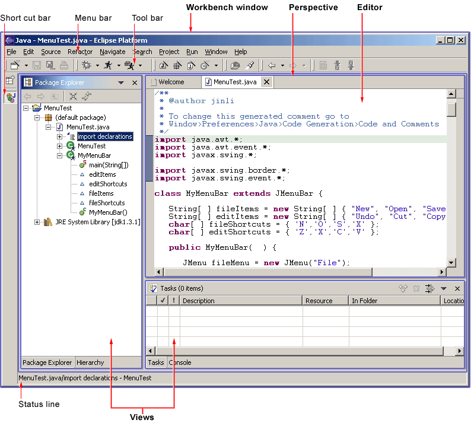
A perspective
is a visual container for a set of views and content editors. The views
exist wholly within the perspective and are not shared, but any opened content
editors are shared across perspectives. If two or more perspectives have the same view opened, they share the same instance of the view although its layout may differ in the perspectives. For perspectives in different Workbench windows, neither editors nor views are shared. A perspective
is like a page within
a book. It exists within a window along with any number of other
perspectives and, like a page within a book, only one perspective is visible
at any time.
The Workbench's main menu bar usually contains the File, Edit, Navigate, Project, Window, Help top-level menus. Other top-level menus that are in between
the Edit and Project menu are typically context specific, based on the
current active perspective, front most editor (whether active or not), and active view..
In the File menu you will find a New submenu, which contains menu items
for Project, Folder, and File creation. The File menu also contains
menu items for Import and Export, which are used to import files into the
Workbench, and export them out again. In the Edit menu, you will
find familiar commands like Cut, Copy, Paste, and Delete. These commands
are known as global commands, and target the active part.
In other words, if the Delete command is invoked with
the Navigator active, the actual implementation is performed by the Navigator.
In the Project menu, you will find project related commands such as Open project,
Close project and Rebuild project are available. In the Run menu,
you will find commands related to running and debugging application code,
and launching external tools such Ant scripts.
In the Window menu, you will find the Open Perspective submenu to open different
perspectives to suit to needs of your development tasks. You will find perspective
layout management menu items. You will also find the
Show View submenu to add views to the current Workbench window.
In addition, you will find the Preferences menu item, which is used to modify the functional
preferences of the Workbench.
As a plug-in developer, you can contribute new views, editors, wizards,
menu, and tool items to the platform. These contributions are defined
using XML, and once registered, integrate seamlessly with the components
which already exist in the platform.
Projects, Folders and Files
Eclipse can be used to create many different kinds of content - Java files, Web content, graphics,
video - almost anything you can imagine. These objects are stored
as regular files within the Eclipse workspace. The workspace consists
of one or more top level projects. Each project contains a collection
of folders and files. These objects are known as resources.
Getting Started
For most developers, an introduction to the platform can be overwhelming,
and you may ask "where do I get started?". Here are a few basic guidelines
which will help you.
This document is intended for UI designers and developers. With this audience
in mind, we can talk about the two main layers of any application: the
model layer and the user interface layer. In the model layer of Eclipse,
known as the Workspace, is a collection of resources (projects, folders
and files). The user interface, or the Workbench, defines the presentation
for those resources.
As a UI developer, you will also have a model and a presentation.
If we assume that your goal is to make the model visible, through some
presentation, most developers will start out by adding a new view or editor
to the workbench.
In Eclipse, an editor is used to contain the primary content, such as a document or data object, which users interact with. In every case, this content is the primary focus of attention and a reflection
of the primary task. To illustrate this concept, let's look at some
common examples.
To do Java programming, the primary task is to
create, edit, and debug Java code. The primary focus is the Java code,
so an editor is used to interact with that code. The navigator, outline,
and properties view exist to support the primary task, but rarely hold
your attention for an extended period of time while you are writing Java
code.
To read email, the primary task is to create,
send, read, and reply to email. The primary focus is a particular email
message, so an editor is used to view or reply to an email message.
A view may be used to select an email message to read, and open an editor.
To communicate using instant messaging, the primary
task is the conversation. The primary focus is a particular conversation,
so an editor is used to carry on that conversation. A view may be
used to list people with whom you can initiate a conversation.
To browse the Web, the primary task is reading.
The primary focus is a particular Web page, so an editor is used to browse
the Web page.
In each case, the primary task determines the primary
focus of attention. As the primary focus of attention, it deserves a primary
position in the UI (as an editor), and can contribute
commands to the workbench's main menu bar and toolbar.
A view may be used to save your favorite links, and reopen
them. At any time, you may decide to edit the page you are looking at.
This causes a new editor to open. Views are used to support the primary task. You
use them to navigate a hierarchy of information, open an editor, or view properties
for the active part. Each view may have its own local toolbar and local menu bar.
Once you have added a view or editor, an interesting question arises.
Where did this model come from? In Eclipse, most data is created
using a creation wizard. You may want to add a creation wizard too.
And once an object exists, you may need a way to edit the properties for
that object using a properties page, or the properties dialog.
All of these ideas will be discussed, in detail, in the following sections.
General UI Guidelines
This document defines UI guidelines that are unique and specific to
the Eclipse platform. It is a supplement to the other standard UI guidelines
such as Microsoft® User Experience, Macintosh Human Interface Guidelines,
and Java Look and Feel Guidelines. You should continue to consult those
guidelines for basic UI design and implementation recommendations.
It is expected that you already have a basic understanding of the Eclipse
UI architecture and APIs, and the basic UI design principles: user in control,
directness, consistency, forgiveness, feedback, aesthetics, and simplicity.
If you do not currently have the prerequisite knowledge, please read the
relevant documentation first.
Guideline 1.1
Follow and apply good user interface
design principles: user in control, directness, consistency, forgiveness,
feedback, aesthetics, and simplicity.
The Spirit of Eclipse
At its heart, Eclipse is a platform for tool plug-ins. These plug-ins
may be developed by a single team or by a partnership of teams, or the
user may assemble a set of plug-ins from diverse sources. In either
case, the usability of an individual tool, and Eclipse as a whole, will
be positively influenced by user interface consistency.
If you're in doubt about the appropriate look and feel for a tool, look
to the platform first, then the Java development tooling and the Plug-in Development Environment (PDE) in Eclipse for
guidance. In many cases, the workflow you imagine may already exist in
Eclipse. If so, adopt the platform's workflow and user interface
conventions. This will lead to greater consistency with the platform and
other plug-ins, and an easier learning curve for your customers.
In some scenarios, it may be tempting to ignore the workflow of Eclipse and
implement a "custom" user interface. This interface will almost certainly
stand out like a sore thumb in an integrated environment, where other tools
adopt the platform conventions. You lose the benefit of past experience,
and force your customers to learn new ideas.
Consult the Best Practices section for examples and more information.
Also, visit the Eclipse
platform newsgroups to share information with the community.
Guideline 1.2
Follow the platform lead for user interface
conventions.
If you decide to reuse the conventions of Eclipse, be careful not to misappropriate
Eclipse specific UI conventions. For instance, the active part in
a workbench window is indicated by a shaded title. The use of shaded
titles within an editor (see below) may be one way to indicate where the
focus is, within that part, but it will also blur the concept of part activation
in the window.
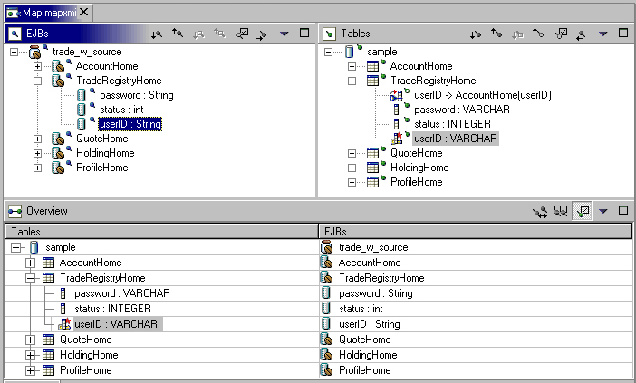
Guideline 1.3
Be careful not to mix UI metaphors.
It may blur the original concept, and your own application.
Eclipse is an open source project. If you feel your ideas are generally
useful, join the Eclipse community, write a proposal, and work with the
Eclipse community to make Eclipse a better platform for product development
and increase customer satisfaction.
Visit www.eclipse.org and join the Eclipse UI mailing list platform-ui-dev.
Guideline 1.4
If you have an interesting idea, work
with the Eclipse community to make Eclipse a better platform for all.
Capitalization
Consistent capitalization of text within a plug-in leads to a more polished
feel, and greater perception of quality. Within a dialog or window,
headline capitalization should be applied to all titles, menus, tooltip, tabs, and push buttons. For example, "Run to Line" can be used as a menu item label.
Sentence style capitalization should
be applied to all check boxes, radio buttons, and group labels.
For example, "Choose an option for the Java file" can be used as a group label.
Guideline
1.5
Use Headline style capitalization for
menus, tooltip and all titles, including those used for windows, dialogs, tabs, column headings
and push buttons. Capitalize the first and last words, and all nouns, pronouns,
adjectives, verbs and adverbs. Do not include ending punctuation.
Guideline 1.6
Use Sentence style capitalization for
all control labels in a dialog or window, including those for check boxes,
radio buttons, group labels, and simple text fields. Capitalize the
first letter of the first word, and any proper names such as the word Java.
Language
Eclipse is available on a variety of different platforms, in a variety of
locales. In reflection of the different languages and numeric formats
in each, a localization strategy should be adopted for the text and images
within each plug-in. This involves the separation of all resources
from the source code of a plug-in itself, so that those resources can be
translated to a new locale.
Consult the Best Practices section for examples and more information.
Guideline 1.7
Create localized version of the resources within your plug-in.
Error Handling
If an error occurs in Eclipse, the appropriate response will be dependent
on the context of the error.
Please refer to Wizards
section for guidelines on how to handle user input errors in a wizard.
Please refer to Editors
section for guidelines on how to handle errors occur in an editor, .
When an error occurs which requires either an explicit user input or
immediate attention from users, a modal dialog should be used to communicate
the error to the user. This forces the user to notice, and deal with
the problem.
Guideline
1.8
When an error occurs which requires either
an explicit user input or immediate attention from users, communicate the
occurrence with a modal dialog.
If a programming error occurs in the product, an error dialog should be
used to communicate the occurrence to the user. The error should
also be logged using the workbench error logging facility. This gives
the user an opportunity to restart the platform, uninstall the corresponding feature,
and contact their system administrator.
The plug-in should provide the following information in the detail area
of the error dialog:
-
Provider name
-
Plug-in name (user friendly name)
-
Plug-in ID
-
Version
Guideline
1.9
If a programming error occurs in the
product, communicate the occurrence with a dialog, and log it.
Visual Design
All visual user interface elements created for Eclipse follow a common style called the
Eclipse visual style or Eclipse style.
In these guidelines you will find basic design information, as well as specifications for
implementing Eclipse style icons and wizard graphics in tools based on the Eclipse framework.
Following these guidelines will help ensure consistency of visual user interface elements and their implementation
across the Eclipse tools and plug-ins. Consistency of these elements includes visual semantic, style, and
implementation considerations. These topics are covered in the following sections.
In the development of the Eclipse style icons, a visual language was formed to describe a variety of concepts in the
user interface. These concepts are now represented by a large selection of tiny visual signs that many have come to know
through using Eclipse tools.
In order to ensure a consistent visual experience, understanding of concepts across the tools, and minimize
confusion for the user, we encourage you to re-use Eclipse style graphical elements whenever possible.
A great many icons have already been created in the Eclipse visual style so there is a good chance many of the icons or
graphical elements you may need already exist. A sample of the core concepts is shown in the following table. Each of these
elements carries with it a specific meaning, so care should be taken when using them to ensure that consistent meaning
is maintained.
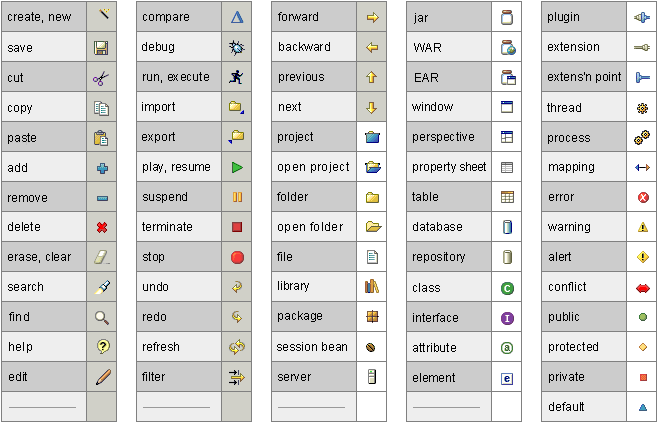
Guideline 2.1
Re-use the core visual concepts to maintain consistent representation and meaning
across Eclipse plug-ins.
Various palettes used in creating Eclipse style icons.
There are 3 different palettes used to create the 3 different icon states, as follows:
-
256 Color Palette for the active or selected — also referred to as "color"— state of all icon types
-
8 Color Grayscale Palette for the enabled state of perspective, view, toolbar, toolbar wizard, and local toolbar icons
-
2 Color Grayscale Palette for the disabled state of toolbar, toolbar wizard, and local toolbar icons
256 Color Palette
Eclipse style icons should be designed using a special 256 color palette that consists of
20 standard colors and 236 custom colors, as shown below.
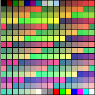
NOTE:
Although the color palette shown is based on the standard windows .aco
color palette that comes with Adobe Photoshop, these two palettes are NOT the same and ONLY the
shown color palette should be used when creating Eclipse style icons.
Guideline 2.2
Use the Eclipse 256 color palette for creating the active or selected state of
all icon types.
8 Color Grayscale Palette
To create grayscale, enabled versions of your full color icons, you will need to use another
palette that consists of the 8 colors shown below:
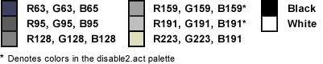
Guideline 2.3
Use the Eclipse 8 color palette for creating the enabled state of perspective,
view, toolbar, toolbar wizard, and local toolbar icons.
2 Color Grayscale Palette
To create grayscale, disabled versions of your full color and enabled icons, you will need to use
a subset of the 8 color palette, that consists of the 2 colors shown below:
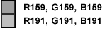
Guideline 2.4
Use the Eclipse 2 color palette for creating the disabled state of toolbar,
toolbar wizard, and local toolbar icons.
The Eclipse style icons have been categorized into separate types so that each can be optimized for its specific
location within the user interface. Below is a breakdown of these types and where they are located.
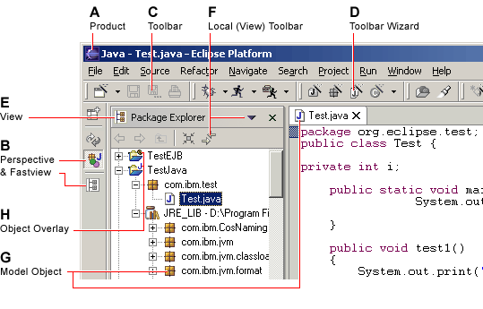
A Product
The Product icon represents the branding of the product, and is always located on the far left
of the window title bar before the perspective, document, and product name.
B Perspective and Fastview
Perspective and fastview icons are found down the left side of the workbench. These icons allow the user to quickly
switch between different opened perspectives, or to invoke different views
that have been created as fastviews.
C Toolbar
Toolbar icons are found on the main toolbar across the top of the workbench. These icons invoke
a command, either globally or within the editor.
D Toolbar Wizard
Toolbar wizard icons are found on the main toolbar across the top of the workbench.
They are easily recognized by their wand and sparkle. Selecting one of these
icons will launch a wizard.
E View
View icons are found on the left side of the titlebar of
each view within the workbench. These icons indicate each view’s function.
F Local (View) Toolbar
Local toolbar icons are found to the right of the view icon on the titlebar of each view
within the workbench. These icons invoke a command on objects in that view only. Local toolbar icons
are also found in all menus, including main, pull down, and context menus.
G Model Object
Model Object icons are found in tree views, list views, and on Editor Tabs within the the workbench
(such as files, folders, projects and so on).
H Object Overlay
Object overlay icons are also found in tree or list views. They are appended to the various
corners of model object icons as signifiers of some sort of change.
Guideline 2.5
Use the appropriate icon type in the location it is designed for within the
user interface.
With few exceptions, Eclipse style icons are designed within an area of 16 x 16 pixels. Within that area, a 15 x 15 pixel
space is reserved for the image itself, leaving both a vertical and horizontal line of empty pixels to allow for proper
placement of the image within the interface. Note the location of the empty pixels in the samples below. The icons are
cut with the specific placement shown to ensure alignment in the user interface.
The diagrams below show the proper sizing of the separate types of icons, and their proper placement within the
allotted screen space.
|
|
View Icons
Maximum 16 pixels wide x 16 pixels high, always centered.
Empty pixels must be on the left, and bottom.
|
|
|
Perspective Icons
Fastview Icons
Maximum 16 pixels wide x 16 pixels high, always centered.
Empty pixels must be on the right, and bottom.
|
|
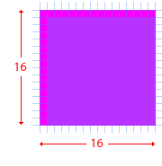
|
Toolbar Icons
Toolbar Wizard Icons
Local Toolbar Icons
Maximum 16 pixels wide x 16 pixels high, always centered.
Empty pixels should be on the left, and top.
|
|
|
Model Object Icons
Maximum 16 pixels wide x 15 pixels high, always centered.
Model Object icons must be no greater than 15 pixels high.
|

|
Object Overlay Icons
Object Overlays are one of the exceptions to the 16 x 16 pixel size.
Maximum 7 pixels wide x 8 pixels high, always centered.
Icon should have a white outside keyline around it to separate it from the icon it is being appended to.
See the next section on Icon Positioning for using the keyline on different types of Object Overlay icons.
|
Guideline 2.6
Follow the specific size specifications for each type of icon.
Guideline 2.7
Cut the icons with the specific placement shown to ensure alignment in the user interface.
To follow from the specific size and placement of the different types of icons within their allotted screen space, the
following positioning guidelines will help with the alignment of these elements relative to one another, and will aid
in creating a well organized and aesthetically integrated user interface. (All measurements are in pixels.)
Overview
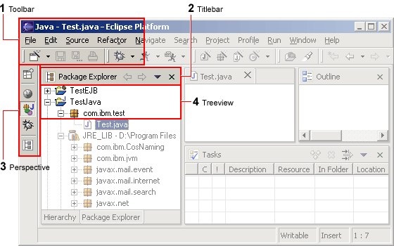
1. Toolbar icons
(Includes Toolbar and Toolbar Wizard Icons)
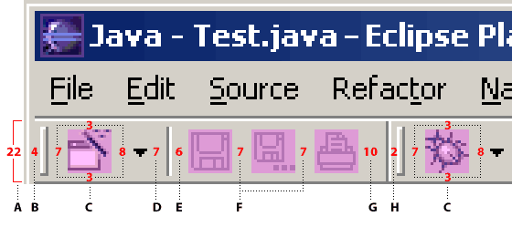
|
|
Item |
Positioning and Spacing |
| A |
Toolbar |
22 pixels high |
| B |
Between left margin and handle |
4 pixels |
| C |
Between handle and first icon |
7 pixels |
| C |
Between icon and top of toolbar |
3 pixels |
| C |
Between icon and bottom of toolbar |
3 pixels |
| C |
Between icon and twisty |
7 pixels |
| D |
Between twisty and hard rule |
7 pixels |
| E |
Between hard rule and icon |
6 pixels |
| F |
Between icons |
7 pixels |
| G |
Between icon and hard rule |
10 pixels |
| H |
Between hard rule and handle |
2 pixels |
2. Titlebar icons
(Includes View and Local Toolbar Icons)
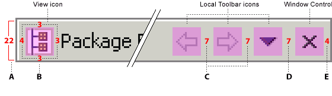
|
|
Item |
Positioning and Spacing |
| A |
Title bar |
22 pixels high |
| B |
Between left margin and view icon |
4 pixels |
| B |
Between view icon and text label |
3 pixels |
| B |
Between title bar icons and top of title bar |
3 pixels |
| B |
Between title bar icons and bottom of title bar |
3 pixels |
| C |
Between local toolbar icons |
7 pixels |
| D |
Between last local toolbar icon and closing window 'x' |
7 pixels |
| E |
Between closing window 'x' and right margin |
4 pixels |
3. Perspective icons
(Includes Perspective and Fastview Icons)
|
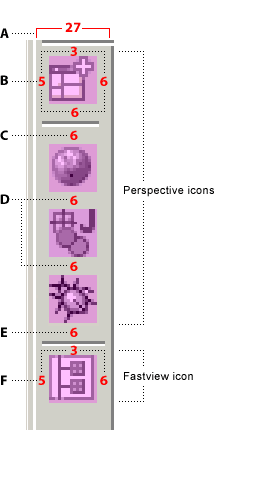
|
Perspective Icons
|
Item |
Positioning and Spacing |
| A |
Perspective bar |
27 pixels wide |
| B |
Between left margin and icon |
5 pixels |
| B |
Between icon and right margin |
6 pixels |
| B |
Between top of perspective section and first icon |
3 pixels |
| B |
Between icon and hard rule |
6 pixels |
| C |
Between hard rule and top of icon |
6 pixels |
| D |
Vertically between icons |
6 pixels |
| E |
Between icon and hard rule |
6 pixels |
Fastview Icons
|
Item |
Positioning and Spacing |
| D |
Vertically between icons (same as perspective icons) |
6 pixels |
| E |
Between icon and hard rule |
6 pixels |
| F |
Between left margin and icon |
5 pixels |
| F |
Between top of fastview section and first icon |
3 pixels |
| F |
Between icon and right margin |
6 pixels |
|
4. Tree View icons
(Model Object Icons)
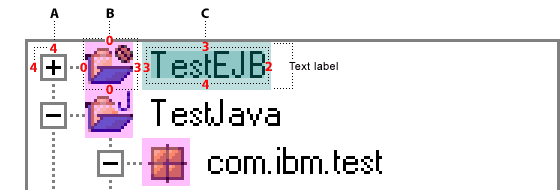
|
|
Item |
Positioning and Spacing |
| A |
Between “+/-” widget and left of window |
4 pixels |
| A |
Between “+/-” widget and top of window |
4 pixels |
| B |
Between top of window and first icon |
0 pixels |
| B |
Vertically between icons |
0 pixels |
| B |
Between horizontal treeview branch and icon |
0 pixels |
| B |
Between icon and text label |
3 pixels |
| C |
Text is nested within the text label |
3 pixels each on left and top, 2 pixels on right, 4 pixels on bottom (length varies) |
As stated under Icon Size & Placement, all overlays are consistently the same size: 7 x 8 pixels.
An additional white border keyline is included on Project Nature and Java Overlay types to visually separate them
from the underlying Model Object icon. The keyline location varies depending on the overlay's placement on the
underlying icon.
Project Nature Overlay
The project nature overlays are displayed in the Navigator and the Package views.
They are completely superimposed on the model object at the top right corner
of the 16 x 16 icon space.
Only a few project nature overlay icons have been created to prevent crowding in the interface.
Project nature overlays quickly identify the various types of projects that can be contained in
the Navigator and mirroring views.
The white keyline border is applied around the image to enhance legibility.
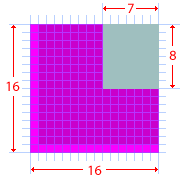
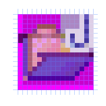
Auxiliary Overlay
The auxiliary overlays are displayed in all tree views. This type of overlay is completely superimposed
on the model object at the bottom left corner of the 16 x 16 icon space.
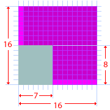
The auxiliary overlay quickly identifies the status of an object. Examples of auxiliary overlays are
warning, error, failure, and success.
Java Overlay
The Java overlays are displayed in the Outline, Hierarchy, and Package views.
The Java overlays are appended to the model object icon, so they extend
the 16x16 icon space. They are placed to the right of a model object icon, overlapping the 16x16 model object space by 3 pixels.
A maximum of 3 java overlays can be put on the model object.
The order in which an overlay appears depends on the order in which it has been assigned. In designing Java overlays, it is
important to make sure the base object icon can support the addition of overlays without compromising readability. Note that there
are two Java overlays that always display at the bottom right corner — 'C' position in the layout shown below — of the
model object:
synchronized (method) and
run (class).
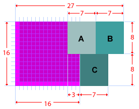
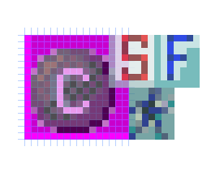
Java overlays identify attributes of an object. Examples of Java overlays are
static, final, abstract, and synchronized.
Note: In the Hierarchy and Outline views, the Java overlays are appended to the right of the model object
as shown, but in the Package view they are stacked over the model object.
Version Control Overlay
Version control overlays are displayed in the Navigator view and in the Structure View of the Merge Editor in CVS.
When they are displayed in the Navigator view, the overlay is completely superimposed on the model object at the right
of the 16 x 16 icon space.
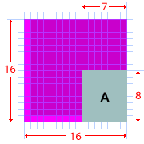
When the version control overlays are displayed in the Structure View of the Merge Editor in CVS, they are
appended to the model object, so they extend the 16x16 space. They are placed to the right of a model object icon,
overlapping the 16x16 model object space by 3 pixels.
In CVS there is a maximum of 2 overlays on the right of the object.
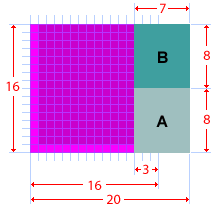
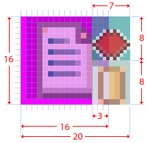
Version control overlays identify a transition-state of an object. Examples of CVS overlays are
incoming, outgoing, in conflict, added, deleted, and changed.
Guideline 2.8
Follow the positioning guidelines for the different types of icons for optimal alignment
of these elements relative to one another.
The Wizard Palette section shows the
the special blue 183 color palette you will need to create your wizard graphics.
Eclipse style wizard banner graphics should be designed using a special blue 183 color palette,
as shown below.
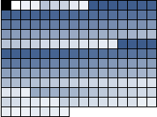
Guideline 2.9
Use the Eclipse special blue 183 color palette for creating wizard graphics.
The Wizard Sizing section gives the sizing guidelines for
creating wizard banner graphics.
All wizard banner graphics are designed to fit within a specified screen space that is
75 pixels wide x 58 pixels high, in the top, right corner of the wizard.
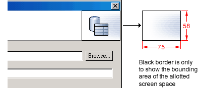
The actual size of each wizard banner graphic will vary depending on the elements involved, but should not exceed
55 pixels wide x 45 pixels high.
Within the wizard banner space allocation,
there is no firm rule for where to place the wizard banner graphic.
Generally, the graphic is centered vertically,
and off-center to the left horizontally.
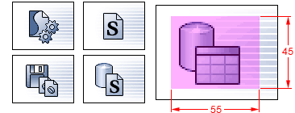
Guideline 2.10
Follow the specific size specifications for wizard graphics.
Guideline 2.11
Cut the wizard graphics with the specific placement shown to ensure alignment
in the wizard banner area.
Eclipse provides a set of directory names and structure for storing and accessing user interface graphics
easily in any plug-in. This section describes the naming conventions and directory path used in Eclipse. If followed,
the predefined directory names and path allow for the icon and wizard graphic files to be implemented directly into the
plug-in structure without any need for modifications.
From icon request to delivery, the naming and structure is the same. If you use a different user interface
directory name or more than one directory to store graphics than that specified at request time, notify your visual
design contact of these changes so that they can maintain a parallel system. Further, keeping the number of directories
in which you store your graphics to a minimum, will reduce unnecessary duplication of graphics and ease resource
management issues considerably.
Directory Names and Structure
Once your icons have been conceptualized, designed, approved and cut, they are stored using the directory naming
convention and structure described below.
- The name of the first level directory refers to the Eclipse platform: Icons used in an Eclipse plug-in are
called org.eclipse.pluginname.ui_0.0.0. Where pluginname is substituted with the name
of the plug-in and _0.0.0 is substituted with the Eclipse version number, for example,
org.eclipse.debug.ui_2.1.0
- Each plug-in that manages user interface elements for a tool set contains a second level directory
called icons.
-
Within the icons directory, there are separate folders with names that indicate the state, type and
size of the icons, as follows:
-
The first letter of the folder name indicates the icon state. The letter c for color,
d for disabled, and e for enabled.
- The next 3 to 6 letters signify the icon type: toolbar (tool), local toolbar (lcl),
view or perspective (view), model object (obj), overlay (ovr), wizard banner (wizban).
- The last two digits of the folder name indicate the size of the icons within. Usually it
will be 16 (to indicate the 16 pixel by 16 pixel size), but there might be others
(for example, 32 would indicate the 32 x 32 size) depending on the plug-in requirements.
The following image shows a complete directory structure for a plug-in.
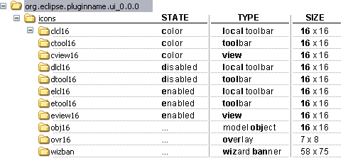
NOTE:
-
For many plug-ins, inside the icons directory, there is a folder called "full"
which then contains these icon type folders. This full folder is being phased out of the icon directory
structure for new plug-ins. The structure shown above is the recommended icon directory structure.
-
Your plug-in may not require all types of icons shown in the sample. The sample illustrates the complete set of icon types
that you may need in your plug-in. In addition, there are sometimes exceptions to this list of types in plug-ins that have
a special type of icon that is not covered by this standard set. This is rare, however, and we encourage you to get to know
the different types and their respective states, and use the structure as shown.
- When an icon has multiple states, the file name is the same across each of the active (color), enabled, and disabled
state folders. Because of this organization, using the states provided is important, and will prevent you from having
to rename the states of your icons if all were stored in the same folder.
Guideline 2.12
Follow the predefined directory structure and naming convention.
Guideline 2.13
Keep the original directory names provided.
Guideline 2.14
Minimize duplication of graphics within a plugin by keeping all graphics in one, or few, first level user interface directories.
Guideline 2.15
Use the active, enabled, and disabled states provided.
File Names
Establishing file names before the icons are designed will help ensure appropriately descriptive names for the concepts
they represent, and may prevent misuse of icons for purposes not intended and duplicate file names. If the names are well
considered in advance, you will appreciate being able to quickly make the distinction between icon types and find concepts
more readily, especially as the volume of your graphic resources increases.
Suggestions for File Name Suffixes
File suffixes are useful for making the distinction between types of user interface elements. They can be used to denote
the location or function of an icon or wizard graphic. The following table shows how suffixes are being used for image file
names in Eclipse:
| Filename Suffix |
Used for icons with the following function or location: |
Icon Type and Location |
| *_wiz.gif |
invoke a wizard, or are graphics within a wizard |
Wizard banner graphics: used in wizard dialog windows.
Wizard icons: used on wizard toolbars. |
| *_exec |
invoke executable files |
Toolbar icons: used in cascading menus, and global toolbars. |
| *_edit |
are in an editor view |
Toolbar icons: used in cascading menus, and global toolbars. |
| *_nav |
are in a navigator view |
Toolbar icons: used in cascading menus, and global toolbars.
Local toolbar icons: found on the far right of the title area of a view.
View and perspective icons: found in the top, left corner of a view. |
| *_misc |
do no fit into any of the other categories |
Toolbar icons: used in cascading menus, and global toolbars.
View and perspective icons: found in the top, left corner of a view. |
| *_tsk |
represent tasks that user can do |
Local toolbar icons: found on the far right of the title area of a view.
Overlay icons: placed on top of a model object icon to indicate a change in condition.
Object icons: used in the tree view, list view, and properties view.
View and perspective icons: found in the top, left corner of a view.
|
| *_mode |
toggles the working mode of the view |
Local toolbar icons: found on the far right of the title area of a view.
|
| *_menu |
are found in a menu |
Local toolbar icons: found on the far right of the title area of a view.
|
| *_ps |
are found in a property sheet |
Local toolbar icons: found on the far right of the title area of a view.
View and perspective icons: found in the top, left corner of a view.
|
| *_obj |
represent model objects |
Model object icons: used in the tree view, list view, and properties view. |
| *_pal |
are model object icons on object palettes |
Model object icons: used on object palettes |
| *_co |
is for commands that engage the system, e.g. build command |
Toolbar icons: used in cascading menus, and global toolbars.
Local toolbar icons: found on the far right of the title area of a view.
|
|
|
|
To aid you in choosing your file names, we offer the following guidelines:
Guideline 2.16
Abbreviate file name instead of using the full icon name,
e.g. New Interface becomes "newint".
Guideline 2.17
Use lower case characters in your file names, e.g. DTD becomes "dtd".
Guideline 2.18
Use 10 characters or less in your file names if possible (underscores count as a character).
Guideline 2.19
Use a file name suffix that describes its location or function in the tool,
e.g. newint_wiz.
Guideline 2.20
Use transparent *.gif format for all user interface icons and wizard graphics,
unless the context requires a different file format.
Guideline 2.21
Keep the original file names provided.
Component Development
Commands
A command, which is invoked by a user to carry out some specific functions, may appear as an item in a menu, or an item in a toolbar.
In reflection of this, it has attributes for the menu or tool item label,
tooltip, and image.
As a plug-in developer, you can contribute commands to the window menu
bar and toolbar, or to individual views and editors. Contribution
to the window is performed using an action set, a set of task oriented
commands which the user can show or hide. Contribution to a view or
editor is performed using individual command.
Here is an illustration of the main areas of contribution.
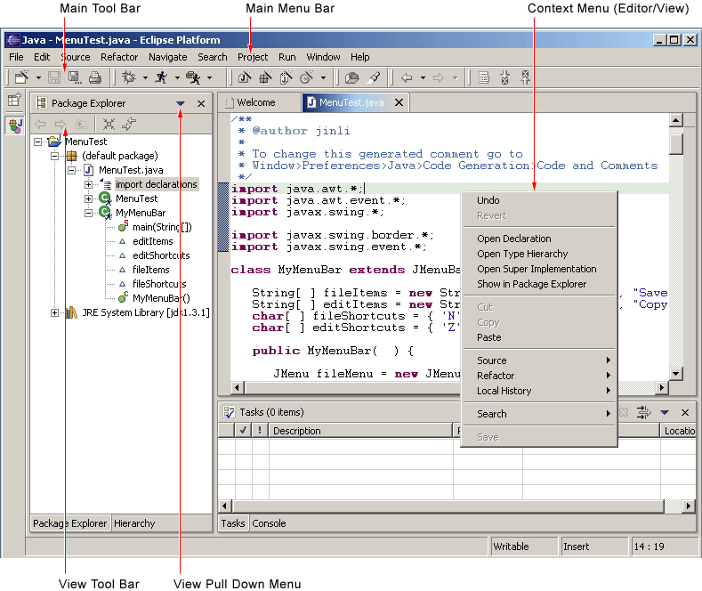
In this section we'll look at general command guidelines. For information
on window, view, or editor specific guidelines, see Windows,
Views,
and Editors.
Appearance
Each command must have a label, tool tip, and image. If the command
appears in a toolbar, the command image will be displayed on all platforms.
If the command appears in a menu, the image will only be displayed on some
platforms, such as Windows® 2000. The label and tool tip should use
Headline style capitalization, as defined in General UI Guidelines.
Each command must provide one full color image. This image will
be displayed if the mouse is placed over the command. It will also
be used to generate the enabled, disabled, and pressed images which appear
in normal command use. Commands which are contributed in code also
have the option to define explicit images for enabled, disabled, and roll
over. This option can be used for greater control over image appearance.
The following snapshot shows the valid use of Headline capitalization
in a toolbar.
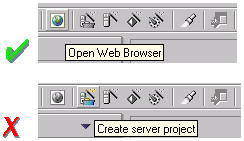
Guideline
3.1
Each command must have a label, tool tip,
and full color image. The label and tool tip must use Headline style
capitalization.
The tool tips for a command should describe the behavior which occurs
if the command is invoked, independent of the current state. For push buttons, the label should decribe the result of users pushing the button.
For toggle buttons, it should describe its effect when the item is toggled on, and the label should not change depending on the state of the button. In Eclipse version 2.1, it is recommended that the tool tip for a command uses the same text as that for the command label.
For instance, in the following snapshot
the behavior of the Show Type Hierarchy button is shown using one tool tips text.
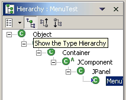
Guideline
3.2
The command tooltip should describe the
result of the command, not the current state of the command. Use the text same as that for the command label.
For consistency, any command which has a similar behavior to existing commands
in the workbench, should adopt the same terminology.
When creating a resource, the term "New" should be used in a command
or wizard. For instance, "New File", "New Project" and "New Java
Class". The term "Delete" should be used when deleting an existing
resource.
When creating an object inside a resource (e.g., a tag in an XML file;
a method or field in a Java class), the term "Add" should be used; the
user is adding something to an existing resource.
Guideline
3.3
Adopt the labeling terminology of the
workbench for New, Delete and Add commands.
Enablement
A command should only be enabled if it can be completed successfully.
If this is not the case, the command should be disabled.
Guideline
3.4
A command should only be enabled if it
can be completed successfully.
Command enablement should be quick to calculate. If it is too expensive
to calculate the enablement of a command, the command should be optimistically
enabled. If the command is invoked, it should calculate the real enablement,
and show a dialog to the user if it is not available.
Guideline
3.5
Command enablement should be quick.
If command enablement cannot be quick, enable the command optimistically
and display an appropriate message if the command is invoked, but cannot
be completed.
Dialogs
A dialog is used for modal interaction with the user. It can be used
to solicit information, or provide feedback.
Initialization
When a dialog first opens, the initial focus should be given to the first
control where information is required from the user. This control
can be determined by the tab order of controls until a control is found
where information is required. If the dialog provides simple feedback,
or requires simple confirmation from the user, the initial focus may also
be assigned to the default button.
Guideline 4.1
When a dialog opens, set the initial
focus to the first input control in the container. If there are no input controls, the initial focus should
be assigned to the default button.
Multiple Item Selection
Slush Bucket widgets (also known as the Twin Box design) should flow from
the left to the right with the source objects on the left and selected
files on the right.
Slush Buckets should also have the following control buttons, in this
order, for moving objects from the source the selected buckets.
| Button |
Function |
| > |
Add whatever is selected on the left to the right |
| < |
Remove selected items from the right |
| >> |
Add all (whether they are selected or not) |
| << |
Remove all |

Guideline 4.2
Slush Bucket widget (or Twin Box) should
flow from left to right with the source objects on the left hand side.
It should have the >, <, >>, << control buttons in this order.
Wizards
In Eclipse, a wizard is commonly used for the creation of new resources,
resource import, or resource export. It can also be used for the
execution of any task involving a sequential series of steps. A wizard
should be used if there are many steps in the task, and they must be completed
in a specific order.
Guideline
5.1
Use a wizard for any task consisting
of many steps, which must be completed in a specific order.
Appearance
At the top of each wizard is a header, containing a banner graphic and
a text area. The banner graphic contains an image representing the
wizard task, and should be created with a white to blue, gray scale palette
for consistency with other banners in Eclipse. These colors also
avoid distracting the user from the important fields of the wizard.
The text area is used to prompt the user for information which is absent,
and display error messages if information is invalid. The presence
of the header, with banner graphic and text area, creates a more polished
feel, and greater perception of quality to the wizard.
At the bottom of each wizard, a Back, Next, Finish, and Cancel button
should appear.
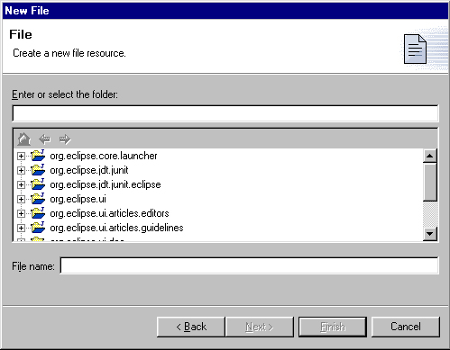
Guideline
5.2
Each wizard must contain a header with
a banner graphic and a text area for user feedback. It must also
contain Back, Next, Finish, and Cancel buttons in the footer.
Initialization
When a wizard first opens, the focus should be placed in the first field
requiring information (see Guidelines 3.1). The header should be
used to prompt the user for the first piece of required information.
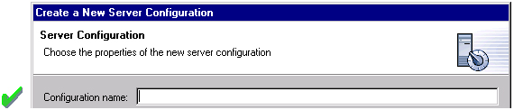
It is not appropriate to display an error message. At this point,
the user hasn't done anything yet.
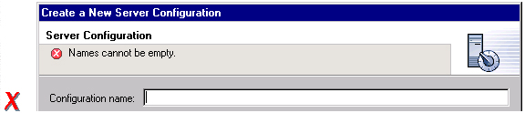
Guideline
5.3
Start the wizard with a prompt, not an
error message.
The initial state of the wizard should be derived from the context where
it is opened. For instance, in the New File wizard, the current workbench
selection is examined. If it points to a valid project or folder,
the wizard will pre-populate the parent field with the parent project or
folder name, and put cursor focus in the next field requiring user input.
If the user's selection does not point to a valid parent project or folder,
the wizard will not pre-populate the folder name. Instead, it will leave
the field blank and put the cursor focus in the field. When
the user's selection is on a file, a wizard may also go through these calculations
using the parent folder or project of the file.
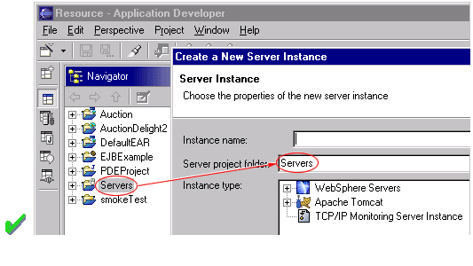
Guideline
5.4
Seed the fields within the wizard using
the current workbench state.
Validation of Data
Information validation within a wizard should be done in tab order.
If the first required field is empty, an informative prompt should be shown
in the text area, directing the user to fill in the field. If the
first required field is in error, an error message should be shown in the
text area. If the first required field is valid, check the next field,
and so on. The text area should not be used to display more than
one prompt or error at a time.
If dialog information is absent or invalid, the Next or Finish buttons
should be disabled until the situation is resolved. When resolution
occurs, and all of the information has been provided, the Next or Finish
buttons may be enabled.
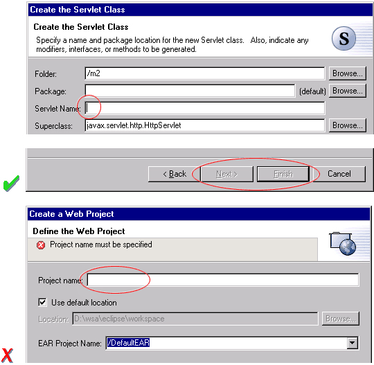
Error messages should only be displayed when user input is invalid.
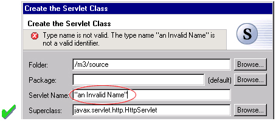
Guideline
5.5
Validate the wizard data in tab order.
Display a prompt when information is absent, and an error when information
is invalid.
Guideline
5.6
Only enable the Next / Finish buttons
if all required information in the dialog is present and valid.
The error messages in a wizard should be intended for the end user, not
the developer. With this in mind, message IDs should never be presented
as part of the error text in the wizard's header area.
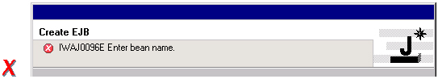
Guideline
5.7
Remove all programming message ID's from
wizard text.
Browse Buttons
An edit field and "Browse..." button combination should be used whenever
an existing object is referenced within a wizard. The edit field
is used for direct input of the existing object, and the Browse button
is used to browse and select the object from a list of all possible choices.
For instance, in the New Java Class wizard, a "Browse..." button is
placed beside the "Super Class" edit field. If the browse button
is pressed, a Browse Dialog will appear, and the user can select a super
class. This pattern should be used whenever a link will be established
between a new object and an old one. The "Browse..." button should
be located to the right of the edit field.
Guideline
5.8
Use a Browse Button whenever an existing
object is referenced in a wizard.
In the Browse Dialog, invalid choices should not appear. When the
dialog is closed, and focus returns to the parent control, refresh the
enablement state of controls within the dialog. In particular, refresh
the enablement of Next, Finish, and OK buttons.
An example of valid and invalid filtering is shown in the following
snapshot.
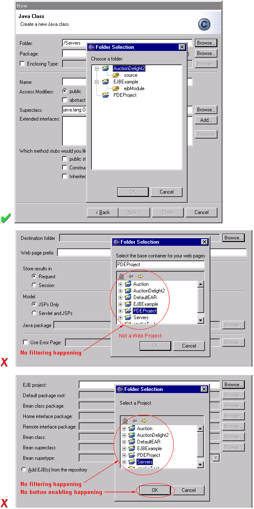
Wizard Completion
The New Resource and Import Wizards commonly create new files, folders,
and projects within the workbench. If a single file is created, the
wizard should open the file in an editor in the active page. If more
than one file is created, open the most important, or central file.
This makes it easier to modify and save the file.
Have a readme.html file for every example project, and open that
readme.html automatically upon project creation. This will give users
an immediate overview of the example: what it does, prerequisites, limitations,
steps to take, and so on.
Guideline
5.9
If a new file is created, open the file
in an editor. If a group of files are created, open the most important,
or central file in an editor. Open the readme.html file upon creation of
an example project.
If a new project is created, the wizard should change the active perspective
within the workbench to one which is appropriate for the new project type.
In Eclipse v2.1, users are prompted to confirm the switch to the preferred perspective when creating a new project.
To avoid loss of context, plug-ins should use this, and not automatically switch without prompting.
If users want to switch automatically in the future, they can choose "Do not show this message again" in
the confirmation dialog.
Guideline
5.10
If a new project is created, prompt users and change the
active perspective to suit the project type.
In either case, where a file, folder, or project is created, the wizard
should select and reveal the new object in the appropriate view.
This provides concrete evidence to the user that, yes, the new object was
created and now exists.
Guideline
5.11
If a new object is created, select and
reveal the new object in the appropriate view.
In many situations, the creation of a resource may involve the creation
of a project or folder to contain the resource. If the containing
project or folder can be created from within the wizard (with a very reasonable
set of defaults), the wizard should allow it. If the creation of such resources
requires detailed user interaction in order for parent project or folder
to be set up correctly, the wizard should not attempt to do this. Instead,
the wizard error text should instruct the user that "The specified project
does not exist".
The EAR Import wizard in IBM's WebSphere Studio is an example where allowing the user to specify
the name of the parent project in place makes for a much more usable interaction.
In this case, based on the user provided name, the wizard goes off and
creates not only the EAR project itself, but also any web projects, etc.,
that may be needed as well.
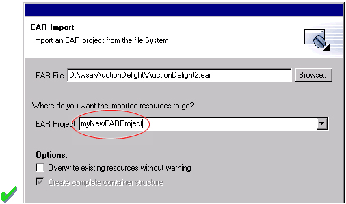
Guideline
5.12
Create folder objects in a wizard if
reasonable defaults can be defined.
Terminology
Within a creation wizard, if the item being created must be a Project (not
a folder below a project), the term "Project" should be used. If it can be a folder below the project, the term
"Folder" should be used. In addition, use the "name" suffix (uncapitalized) and no other prefix for the input field label. For example, use "Project name" or "Folder name" but not "Project Name" or "Server Project name".
Guideline
5.13
Use the term "Project name" for the input field label when the
item must be a Project; otherwise, use the term "Folder name". Do not qualify
the term.
Editors
An editor is a visual component within a workbench page. It is
used to interact with the primary content, which
may be a document or data object. In every case, this content is
the primary focus of attention and a reflection of the primary task.
Guideline
6.1
Use an editor to edit or browse a file,
document, or other primary content.
Modifications made in an editor follow an open-save-close lifecycle model.
When an editor first opens, the editor contents should be unmodified (clean).
If the contents are modified, the editor should communicate this change
to the platform. In response, an asterisk will appear in the editor
tab. The modifications should be buffered within the edit model,
until such a time as the user explicitly saves them. At that point,
the modifications should be committed to the model storage.
Guideline
6.2
Modifications made in an editor must
follow an open-save-close lifecycle model.
An editor is document or input-centric. Each editor has an input,
and only one editor can exist for each editor input within a page.
This policy has been designed to simplify part management.
Guideline
6.3
Only one instance of an editor may exist,
for each editor input, within a perspective.
In addition, it should be possible to open a separate instance of an editor
for each different input.
Guideline
6.4
It must be possible to open a separate
instance of an editor for each different input.
Appearance
The editor should be labeled with the name of the resource being edited;
not with the name of the editor.
Guideline
6.5
The editor should be labeled with the
name of the file, document, or input being edited.
If the editor contains more than one page, a tab control should be used
for page activation. The use of this control is demonstrated by the
plugin file and html editors.
Tab labels should be kept to one word, and two words at most.
Guideline
6.6
In multipage editors, use a tab control
for page activation.Tab labels should be kept to one word, and two words
at most.
Menus
An editor may contribute items directly to the window menu bar. All
of the commands available in the editor should be displayed in the window
menu bar, for accessibility and clarity.
Exceptions are for the obvious commands, e.g. basic navigations such as next / previous character, line, word.
Guideline
6.7
All of the commands, except for the obvious commands, available in the editor
should be added to the window menu bar.
The following format is recommended, to ensure consistency across Eclipse
and better ease of use.
| Edit |
(one or more editor specific menus) |
Window |
| Add any object centric commands here |
(commands belong to the specific menus) |
Actions to control what you see in the editor. |
Guideline
6.8
Use the standard format for editor contributions
in the window menu bar.
The window menu bar contains a number of global commands, such as Cut, Copy,
and Paste in the Edit menu. These commands target the active part,
as indicated by a shaded title area. If these commands are supported
within an editor, the editor should hook these window commands, so that
selection in the window menu bar or toolbar produces the same result as
selection of the same command in the editor. The editor should not
ignore these commands, and contribute duplicate commands to the window menu
bar or toolbar.
A complete list of the global commands is declared in the IWorkbenchActionConstants.java
(see below).
/**
* From IWorkbenchActionConstants.
* Standard global
commands in a workbench window.
*/
public static final
String [] GLOBAL_ACTIONS = {
UNDO,
REDO,
CUT,
COPY,
PASTE,
PRINT,
DELETE,
FIND,
SELECT_ALL,
BOOKMARK
};
Guideline
6.9
If an editor has support for Cut, Copy,
Paste, or any of the global commands, these commands must be executable from
the same commands in the window menu bar and toolbar.
Toolbars
An editor may contribute commands directly to the window toolbar.
The toolbar is used to expose the
most commonly used
commands in an editor.
Any command which appears in the toolbar must also appear in the menu, but
there is no need to duplicate every command in the menu within the toolbar.
Guideline
6.10
Fill the editor toolbar with the most
commonly used items in the view menu.
The use of a local toolbar within an editor is contrary to the design of
the workbench. Within the workbench, the toolbar for an editor is
shared with editors of the same type. This reduces the flash which
occurs when you switch between editors, reduces the number of images and
commands in the product, and creates a better feel of integration.
Context Menus
A context menu should be used for context sensitive interaction with the
objects in an editor. If an object is selected in an editor, and
the context menu is opened, the context menu should only contain commands
which are appropriate for the selection. Commands which affect the
presentation of the view should not appear in the context menu.
In a text editor, you may assume that there is only one type of selection:
text. In this case, the contents of the context menu will remain
consistent for any selection in the editor.
Guideline
6.11
Fill the context menu with selection
oriented commands.
For consistency with other editors in Eclipse, each editor should adopt
a common order for commands within the context menu. This format is
shown in the following table. Within this table, each item represents
a category of commands. The categories within the context menu should
be kept distinct from one another through the use of separators.
| Undo / Redo |
| Add |
| Show In |
| Cut Copy Paste |
| Delete |
| Other Plugin Additions |
| Save |
Guideline
6.12
Use the standard format for editor context
menus.
For good spatial navigation, fill the context menu with a fixed set of
commands for each selection type. Once the contents have been defined,
the enablement state of each command should be determined using the selected
object state. In doing so, you establish a consistency which makes
the menu more predictable, and easier to navigate.
Guideline
6.13
Fill the context menu with a fixed set
of commands for each selection type, and then enable or disable each to
reflect the selection state.
One of the primary goals for the platform UI is extensibility. In
fact, it is this extensibility which gives you the freedom to add new views,
editors, perspectives, and actions to the platform. Of course, extensibility
is a two way street. While you may wish to extend the platform, others
may wish to extend your view or editor. It is common for one plug-in
to add actions to the menu, toolbar, or context menu of an editor from
another plugin.
In the platform, the menu and toolbar for an editor are automatically extended
by the platform. In contrast, context menu extension is supported in collaboration
between the editor and the platform. To achieve this collaboration, an
editor must register each context menu it contains with the platform.
It should also define a command filter for each object type in the editor.
A command filter makes it easier for one plug-in to add a command to objects
in an editor defined by another plug-in. The target is described using
object type and attributes. For more information on the implementation
of this concept, refer to Creating
an Eclipse View.
Guideline
6.14
Register all context menus in the editor
with the platform.
Guideline
6.15
Implement a Command Filter for each object
type in the editor.
Resource Deletion
When a resource is deleted from one of the navigators (e.g., Navigator
view, J2EE view, Data view, or DBA Explorer view in IBM's WebSphere Studio), the handling of any
editor that is currently open on that resource depends on whether the editor has any unsaved changes.
If the editor does not contain any changes since the resource was last
saved then the editor should be immediately closed.
Guideline
6.16
If the input to an editor is deleted,
and the editor contains no changes, the editor should be closed.
If the editor contains changes to the resource since the resource was last
saved (i.e., it is "dirty"), the editor should give the user a chance to
save their changes to another location, and then close. Here is a
sample of the dialog which should be displayed:
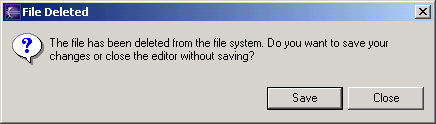
Guideline
6.17
If the input to an editor is deleted,
and the editor contains changes, the editor should give the user a chance
to save their changes to another location, and then close.
Unsaved Changes
If the editor contains changes to the resource since the resource was last
saved (i.e., it is "dirty"), an asterisk should be used to prefix the resource
name presented in the editor tab:
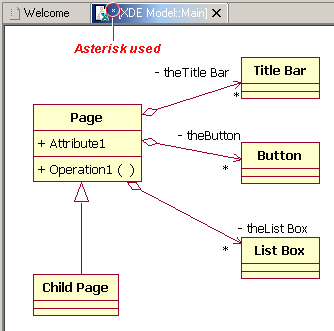
Guideline
6.18
If the resource is dirty, prefix the resource
name presented in the editor tab with an asterisk.
Read Only Files
With a name like "editor", it's not surprising that the issue of read-only
files may cause confusion. If it's read-only, how can you edit it?
In this case, you should fall back to first principles.
A view is typically used to navigate a hierarchy of information,
open an editor, or display properties for the active editor. An editor
is typically used to edit or browse a file, document or other input object.
This statement is appropriate whether a file is read-only or not.
In either case, the user should be able to select the file, open it, and
browse the contents within an editor. If the file is read-only, the File
> Save command should be disabled and the File > Save As should be enabled.
In the status bar area, "Read-only" should be shown instead of the default
"Writable" message.
Guideline
6.19
Treat read-only editor input as you would
any other input. Enable the Save As if possible. Display "Read-only"
in the status bar area.
Integration with Other Views
In Eclipse, there is a special relationship between each editor and the
Outline view. When an editor is opened, the Outline view will connect
to the editor, and ask it for an outline model. If the editor answers
an outline model, that model will be displayed in the Outline view whenever
the editor is active. The outline is used to navigate through the content, or interact with the edit data at a higher level of abstraction.
For instance, if you open a .java file in an editor, the structure of
the class is displayed in the Outline view. If you select a method
or field in the outline, the text declaration of that item will be selected
and revealed in the editor. If you select a method or field,
and open the context menu, you can interact with the item as a conceptual
unit, rather than just a bunch of text.
In general, an editor should provide an outline model to the Outline
view if the data within the editor is too extensive to see on a single
screen, and will yield a structured outline. This structured outline
makes it very easy to navigate through objects like a java file or html
file.
Guideline
6.20
If the data within an editor is too extensive
to see on a single screen, and will yield a structured outline, the editor
should provide an outline model to the Outline view.
When an editor has an interaction with the Outline view, notification
about location should be two-way. That is, the user should be able to select
something in the outline and have the editor position updated, and the
user should be able to select something in the editor pane and have the
outline view updated.
A context menu should be available, as appropriate, in the outline
view which should support creation operations as appropriate.
Guideline
6.21
Notification about location between an
editor and the Outline view should be two-way. A context menu should be available
in the Outline view as appropriate.
If the edit model contains errors or warnings, they should be indicated
in the Outline view. An error or warning image should be added to
the item with the error or warning respectively. A container should have a red X if it there are errors on the container itself, a gray X if any of its descendents have errors (but not the container itself), and no X if neither the container nor any of its descendents have errors. For instance, in the
following line, the addFastView method has an error, so an error image
is added to the item and its parent.
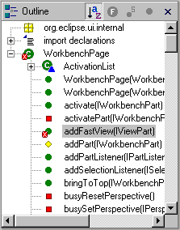
For this to work, care must be taken to design icons with overlay in
mind, so that glyphs can be applied to the ancestor's icon.
Guideline
6.22
An error or warning image should be added
to items with the error or warning respectively. A container should have a red X if it there are errors on the container itself, a gray X if any of its descendents have errors (but not the container itself), and no X if neither the container nor any of its descendents have errors.
In an editor, task objects are commonly used to mark a location within
a document. Once a task has been created, it appears in the Task
view. If the task is selected, you may reopen the editor at the location
defined in the Task.
Guideline
6.23
If appropriate, implement the "Add Task"
feature in your editor.
A bookmark object can also be used mark a location within a document.
Once a bookmark has been created, it appears in the Bookmarks view.
If the bookmark is selected, you may reopen the editor at the location
defined in the Task.
Guideline
6.24
If appropriate, implement the "Add Bookmark"
feature in your editor.
Line Numbers
Editors with source lines of text should have line numbers, and optionally
column numbers. Editors should also support Navigate -> Goto Line...
menu allowing users to quickly jump to a desired
line. The current line and column numbers should be shown in the status line (column number is optional). It's optional for the editor to show line numbers for each line in the editor itself.
Guideline
6.25
Editors with source lines of text should show the current line and optionally column numbers the status line. It's optional for the editor to show line numbers for each line in the editor itself.
Table Cell Editors
If the editor contains tables with editable cells, a single-click over a cell should select the current item and put the cell
into edit mode. In edit mode, any dropdowns, buttons, or other controls
in the cell should be rendered upon the single-click.
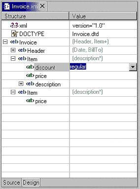
Guideline
6.26
Table cell editors should support the
single-click activation model, and in edit mode, they should render complex
controls upon single-click.
In addition, changes should be committed once a user clicks off
the cell or hits ENTER.
The following are examples of good behaviour for a table cell editor:
- when put in edit mode, drop-down appears with current selection active
& highlighted
- when cursoring through drop-down using arrow keys, it is possible
to move up and down any number of choices and the drop-down stays visible
until user makes an explicit selection
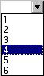
- first letter navigation is supported as a cursoring technique when
the drop-down is visible
- supports the "Enter" key as a way of making an explicit selection
via the keyboard when the drop-down is visible
- supports the "Esc" key as a way of canceling a selection via the
keyboard when the drop-down is visible
- when put in edit mode, the drop-down control (the down-arrow image) appears with current selection active
& highlighted
- when put in edit mode, it is possible to arrow key through the choices
to make a selection without needing to invoke the drop-down
Guideline
6.27
Changes made in a table cell editor should
be committed when a user clicks off the cell or hits the "Enter" key. Selection
should be cancelled when user hits the "Esc" key.First letter navigation
should be supported as a cursoring mechanism within a cell.
Error Notification
If you are doing keystroke by keystroke validation in an editor, use red squiggles to underline the invalid content. When users move the mouse over the red squiggles, display the error text in a fly-over pop up box.
Guideline
6.28
When performing fine-grain error validation
in an editor, use red squiggles to underline the invalid content. When users move the mouse over the red squiggles, display the error text in a fly-over pop up box.
When the Save command is invoked in an editor, use the Task view for showing
errors which are persisted.
Guideline
6.29
Use the Task view to show errors found
when the Save command is invoked.
Interaction With External Editors
While a resource is opened within the workbench, if modifications are made
to it outside of the workbench, we recommend the following approach to
handle this situation. When the Save command is invoked in the editor, users
should be prompted to either override the changes made outside of the workbench,
or back out of the Save operation.
If desired, this user prompt can be invoked sooner such as when the editor regains the focus.
Guideline
6.30
If modifications to a resource are made
outside of the workbench, users should be prompted to either override the
changes made outside of the workbench, or back out of the Save operation
when the Save command is invoked in the editor.
Views
A view is a visual component within a workbench page. It is
used in a support role for the primary task. You use them to navigate
a hierarchy of information, open an editor, or view properties for the
active editor.
Guideline
7.1
Use a view to navigate a hierarchy of
information, open an editor, or display the properties of an object.
Modifications made in a view should be saved immediately. For instance,
if a file is modified in the Navigator, the changes are committed to the
workspace immediately. A change made in the Outline view is committed
to the edit model of the active editor immediately. For changes made
in the Properties view, if the property is a property of an open edit model,
it should be persisted to the edit model. If it is a property of a file,
persist to file.
In the past, some views have tried to implement an editor style lifecycle,
with a Save command. This can cause confusion. The File menu
within a workbench window contains a Save command, but it only applies to
the active editor. It should not target the active view. This
leads to a situation where the File > Save command is in contradiction to
the Save command within the view.
Guideline
7.2
Modifications made within a view must
be saved immediately.
Within a perspective, only one instance of a particular view can be opened.
This policy is designed to simplify part management for a user. The
user opens a view by invoking Perspective > Show View. If, for any
reason, they lose a view, or forget about its existence, they can simply
invoke Perspective > Show view again to make the view visible.
Guideline
7.3
Only one instance of a view may exist
in a perspective.
In a multi-tasking world, humans often perform more than one task at a
time. In Eclipse, task separation can be achieved by creating a separate
perspective for each task. In reflection of this, a view must be able to be opened in more than one perspective. If only one
instance of a view may exist, the ability to multi-task is taken away.
Guideline
7.4
A view must be able to be opened in more than one perspective.
A view can be opened in two ways: by invoking Window > Show View >
X menu, where X is the name of the view, or by invoking another command
within the workbench. For instance, if you select a class in the
Packages view, and invoke Open Type Hierarchy, a Hierarchy view opens with
the class hierarchy for the selection.
It should be possible to open any view from the Window > Show View
menu, either as an explicit item within the menu, or as an item within
the Window > Show View > Other... dialog.
Guideline
7.5
A view can be opened from the Window
> Show View menu.
Appearance
A view consists of a title area, a toolbar, a pulldown menu, and an embedded
control.
The view label in the title bar must be prefixed with label of the view
in Perspective > Show View menu. Given that it is impossible to change
the entry in the Show View menu, this means you cannot change the name
of a view. However, you can add additional text to the view label,
to clarify the state of the view.
Guideline
7.6
The view label in the title bar must
be prefixed with the label of the view in the Perspective > Show View menu.
In most cases, a view will contain a single control or viewer. However,
it is possible to embed more than one viewer or control in the view.
If these controls are linked, such that selection in one control changes
the input of another, it may be better to separate the view into two. Users
will have greater freedom to open one of the results views, as their needs
arise. Special relationships can also be set up between these views to
support the user task. In addition, this makes it easier for users to create
a new perspective with a diverse set of views.
Guideline
7.7
If a view contains more than one control,
it may be advisable to split it up into two or more views.
Initialization
When a view is opened, the input of the view should be derived from the
state of the perspective. The view may consult the window input
or selection, or the state of another view. For instance, if the
Outline view is opened, it will determine the active editor, query the
editor for an outline model, and display the outline model.
Guideline
7.8
When a view first opens, derive the view
input from the state of the perspective.
If the view is used to navigate a hierarchy of resources (i.e., the Navigator
or Packages view), the input of the view may be derived from the window
input. The window input defines the scope of visible resources
within the perspective, and is defined by the user if they select a resource
in the Navigator and invoke Open in New Window. For instance, if the
Navigator view is opened, it will ask its perspective for the window
input. The result is used as the initial input for the view.
Guideline
7.9
If a view displays a resource tree, consider
using the window input as the root of visible information in the view.
Menus
Use the view pulldown menu for presentation commands, not
selection-oriented commands.
These are commands which affect the presentation of the view, but not the
objects within the view. Do not put presentation commands in the context menu. For instance, the Sort and Filter commands
within the Navigator view affect the presentation of resources, but do
not affect the resources themselves.
Guideline
7.10
Use the view pulldown menu for presentation commands, not
selection-oriented commands.
For consistency with other views in Eclipse, each view should adopt a common
order for commands within the pulldown menu. This order is shown
in the following table.
| View modes (e.g. the 3 modes in the Hierarchy view) |
| [separator required] |
| Working sets (e.g. Select/Deselect/Edit Working Set, used in Navigator and Package Explorer) |
| [separator required] |
| Sorting |
| [optional separator] |
| Filtering |
| [optional separator] |
| View layout (e.g. Horizontal vs. Vertical in Hierarchy view) |
| [optional separator] |
| Link with Editor |
| [separator required] |
| Other presentation commands from the view itself |
| [separator required] |
| Presentation commands from other plug-ins |
Guideline
7.11
Use the standard order of commands for view pulldown
menus.
Toolbars
The toolbar is used to expose the most commonly used commands in a view.
Any command which appears in the toolbar must also appear in the menu (either the context menu or the view menu), but
there is no need to duplicate every command in the menu within the toolbar.
Guideline
7.12
Put only the most commonly used commands on the toolbar. Any command on a toolbar must also appear in a menu, either the context menu or the view menu.
Context Menus
A context menu should be used for context sensitive interaction with the
objects in a view. If an object is selected in a view, and the context
menu is opened, the context menu should only contain actions which are
appropriate for the selection. Actions which affect the presentation
of the view should not appear in the context menu.
Guideline
7.13
Fill the context menu with selection
oriented actions, not presentation actions.
For consistency with other views in Eclipse, each view should adopt a common
order for commands within the context menu. This order is shown in
the following table. Within this table, each item represents a category
of commands. The categories within the context menu should be kept
distinct from one another through the use of separators.
| New |
| Open |
| Navigate + Show In |
| Cut, Copy, Paste, Delete, Move, Rename and other refactoring commands |
| Other Plugin Additions |
| Properties |
The New category contains actions which create new objects. The
Open category contains actions which open the selection in an editor.
Navigate contains actions to refocus the view input, or reveal the view
selection in another view. And the other categories are self explanatory.
Guideline
7.14
Use the standard order of commands for view context
menus.
For good spatial navigation of the menu, fill the context menu with a fixed set of
commands for each selection type. Once the contents have been defined,
the enablement state of each command should be determined using the selected
object state. In doing so, you establish a consistency which makes
the menu more predictable, and easier to navigate.
Guideline
7.15
Fill the context menu with a fixed set
of commands for each selection type, and then enable or disable each to
reflect the selection state.
An object in one view may be visible in many other views or editors.
For instance, a .java file is visible in the Navigator, the Hierarchy view,
and the Packages view. To the user, these objects are all the same,
regardless of location, so the context menu for the .java file should be
the same in each.
Implementation tip:
To achieve a consistent context menu, plug-in developers which introduce
a new object type should contribute commands to the context menu using an
action group(ActionGroup class), a Java class which populates the context menu. If
this approach is used, the action group can be reused by other views where the
same objects appear.
Guideline
7.16
If an object appears in more than one
view, it should have the same context menu in each.
One of the primary goals for the platform UI is extensibility. In
fact, it is this extensibility which gives you the freedom to add new views,
editors, perspectives, and actions to the platform. Of course, extensibility
is a two way street. While you may wish to extend the platform, others
may wish to extend your view or editor. It is common for one plug-in
to add actions to the menu, toolbar, or context menu of a view from another
plugin.
In the platform, the menu and toolbar for a view are automatically extended
by the platform. In contrast, context menu extension is supported in collaboration
between the view and the platform. To achieve this collaboration, a view
must register each context menu it contains with the platform. It should
also define a command filter for each object type in the view. A command
filter makes it easier for one plug-in to add a command to objects in a view
defined by another plug-in. The command target is described using object
type and attributes. For more information on the implementation
of this concept, refer to Creating
an Eclipse View.
Guideline
7.17
Register all context menus in the view
with the platform.
Guideline
7.18
Implement a Command Filter for each object
type in the view.
Integration with the Window Menu Bar and Toolbar
The window menu bar contains a number of global commands, such as Cut, Copy,
and Paste within the Edit menu. These commands target the active part,
as indicated by a shaded title area. If these commands are supported
within a view, the view should hook these window commands, so that selection
in the window menu bar or toolbar produces the same result as selection
of the same command in the view.
A complete list of the global commands and built-in menus as declared in IWorkbenchActionConstants.java
(see below).
File menu: Revert, Move, Rename, Refresh, Print, Properties
Edit menu: Undo, Redo, Cut, Copy, Paste, Delete, Select All, Find/Replace, Add Bookmark, Add Task
Navigate menu: Go Into, Back, Forward, Up One Level, Next, Previous, Back, Forward
Project menu: Open Project, Close Project, Build Project, Rebuild Project
Guideline
7.19
If a view has support for Cut, Copy,
Paste, or any of the global commands, these commands must be executable from
the same commands in the window menu bar and toolbar.
Although a view can't directly contribute to the main menubar or toolbar in Eclipse v2.1, it can still cause commands to appear there using "action set / part associations" (the actionSetPartAssociations extension point) which lets you associate action sets with particular parts (views or editors). For example, the Java tooling in Eclipse uses this for the Package Explorer.
All commands for the view (or editor) should be made available on the main menubar, and only frequently used commands are on the context menu.
In addition, the primary perspective(s) for such views (e.g. the Java and Java Browsing perspectives) should already have these action sets associated with the perspective, to improve UI stability.
Persistence
One of the primary goals for the platform UI is to provide efficient interaction
with the workspace. In the platform this is promoted by saving the
state of the workbench when a session ends (the workbench is shut down).
When a new session is started (the workbench is opened), this state is
restored, reducing the time required for the user to get back to work.
If a view has a static input object, in the sense that its input is not derived
from selection in other parts, the state of the view should be persisted between
sessions. If a view has a dynamic or transient input object, there is no need
to persist its state between sessions. Within the workbench, the state of the
Navigator view, including the input and expansion state, is saved between sessions.
For more information on the implementation of persistence, see "Creating
an Eclipse View".
Guideline
7.20
Persist the state of each view between
sessions.
Navigation views should support "Link with
Editor" on the view menu. In Eclipse v2.1, this feature works on a
per-view setting. If it's expected that users will toggle it frequently,
then it can also go on the toolbar, but this is not required (the
Hierarchy view and the views in the Java Browsing perspective support
it, but don't have it on the toolbar, since they expect linking to
almost always be on).
The behaviour of "Link with Editor" is:
- when toggled off, no linking occurs (either view->editor or
editor->view)
- when toggled on, linking occurs in both directions:
- view->editor: when the selection is changed in the view, it
brings any corresponding previously-open editor to front, but does not
activate it (the view must keep focus)
- editor->view: when the user switches between editors, the view
updates its selection to correspond to the active editor
- when turned on, it should immediately synchronize the selection in
the view with the frontmost editor, if applicable
- this is not the same as single-click mode -- it does not cause new
editors to be opened
- changing the setting affects only the current view instance, not
other instances of the same type
- the view should persist the state of this setting separately for
each view instance, and also globally (but separately for each view
type, e.g. Navigator and Package Explorer persist their last setting
separately)
- when opening a new instance of the view, it should use the last
global setting
- the default setting (if there's no previously persisted global
setting) is up to the view, but primary navigation views like the
Navigator and Package Explorer default to off
Guideline 7.21
Navigation views should
support "Link with Editor" on the view menu
Perspectives
A perspective is a visual container for a set of views and editors (parts).
Different perspectives can have different sets of views open, but if they both have the same view open, it's shared between them (but only if they are in the same workbench window). Editors are always all shared between perspectives in the same window.
A new perspective is opened by invoking Window -> Open Perspective -> X, where
X identifies a particular perspective in Eclipse. The result is a
new perspective in the workbench window with type X. For instance,
if you invoke Window -> Open Perspective -> Resource, a new perspective is opened
with type Resource. Eclipse comes with a pre-defined number
of perspective types, such as Resource, Java, and Debug. The perspective
type determines the initial layout of views, and visibility of command sets
within the perspective.
As a plug-in developer, you may contribute new perspective types to Eclipse.
To do this, you must define a perspective extension. Each extension has
a perspective factory, a Java class which defines the initial layout
of views, and visibility of command sets within the perspective. You can
also add your own actions or views to an existing perspective type. For
more information on the implementation of these concepts, see Using
Perspectives in the Eclipse UI.
A new perspective type should be created when there is a group of related
non-modal tasks which would benefit from a predefined configuration of commands and
views, and these tasks are long lived. A task oriented approach is
imperative. As a development environment, Eclipse was designed to
fulfill the needs of a large product development team, from product manager
to content developer to product tester. It is fully extensible and
may be configured with hundreds of command, wizard, view and editor extensions.
In other words, it may contain a lot of features you'll never use. To
avoid the visual overload and confusion which would occur if everything
was visible in the UI, a perspective can be used to limit the presentation to a task-oriented set of views and command sets.
For instance, the task of Java code creation is long lived and complex,
so the creation of a Java perspective is warranted. In Eclipse, the
Java perspective contains an editor area, Packages Explorer view, Hierarchy view,
Tasks view, and Outline view. The Java and Debug command sets are
also visible. Together, these components are useful for a variety
of long lived, Java coding tasks.
It is not appropriate to create a new perspective type for short lived
tasks. For instance, the task of resource check-in is short lived,
so it may be better performed using a view in the current perspective.
Guideline
8.1
Create a new perspective type for long
lived tasks, which involve the performance of smaller, non-modal tasks.
If your plug-in contributes a small number of views, and these augment
an existing task, it is better to add those views to an existing perspective.
For instance, if you create a view which augments the task of Java code
creation, don't create a new perspective. Instead, add it to the
existing Java perspective. This strategy provides better integration
with the existing platform.
Guideline
8.2
If you just want to expose a single view,
or two, extend an existing perspective type.
View Layout
If the user opens a new perspective, the initial layout of views will be
defined by the perspective type (i.e., Resource, Java). This
layout is performed in the perspective factory, a Java class associated
with the perspective type. When the perspective is initialized, it
consists of an editor area with no additional views. The perspective
factory may add new views, using the editor area as the initial point of
reference.
The size and position of each view is controlled by the perspective
factory. These attributes should be defined in a reasonable
manner, such that the user can resize or move a view if they desire it.
An important issue to consider is the overall flow between the views (and editors) in the perspective. For example, initially the navigation views may be placed to the left of the editor area, outline views may be placed either to the right of the editor area or below the navigation view, and other supporting views may be placed below and to the right of the editor area.
Guideline
8.3
The size and position of each view in
a perspective should be defined in a reasonable manner, such that the user
can resize or move a view if they desire it. When defining the initial layout, it is important to consider the overall flow between the views (and editors) in the perspective.
A perspective should have at least two parts, including the visible views
and the editor area. If this is not the case, then the perspective
should be re-examined to determine if it is better suited as a view or
editor.
Guideline
8.4
If a perspective has just one part, it
may be better suited as a view or editor.
In some scenarios, it may be undesirable to have an editor area within
a perspective. In this case, the perspective factory should hide
the editor area, using the existing java methods. It is not acceptable
to resize the editor area to a point where it is no longer visible.
If the user does open an editor in the perspective, for whatever reason,
they will be unable to see or resize it.
When the editor area is programmatically hidden, if the user opens an
editor in the perspective, the editor area will become visible. The view
that occupied the editor area before will be shrunk. Therefore, it is
important to define a non-empty editor area even when the editor is programmatically
hidden.
Guideline
8.5
If it is undesirable to have an editor
area in a perspective, hide it. Do not resize the editor area to
the point where it is no longer visible.
Command Contribution
The perspective factory may add actions to the File > New, Window > Open Perspective
, and Window > Show View menus. It is also possible
to add one or more command sets to the window. In each case, you should
choose commands which are relevant to the task orientation of the perspective.
The File > New menu should be populated with wizards for the creation
of objects commonly used in the task. For instance, in the Java perspective
the File > New menu contains menu items for the creation of packages, classes,
and interfaces.
The Window > Show View menu should be populated with the initial
views in the perspective, as well as any extra views that may be important
for the task at hand.
The Navigate > Show In menu should be used to allow users to navigate in their contents.
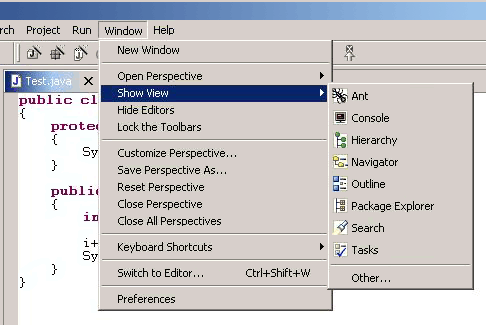
The application development lifecycle should be considered when populating
the the Window - Open Perspective menu. The development of most applications
follow a well defined lifecycle, from designing / modeling, to editing
/ creating, to debugging / testing, to assembling / deploying. Each
perspective will fall into one of these steps. The Open
Perspective menu should be used to link the current perspective to perspectives
that support tasks immediately downstream of the current one, as well as
tasks further upstream, to allow for iterative development.
For instance, the Java perspective is used in a larger lifecycle, involving
Java and Debug tasks. The Window > Open Perspective menu is populated
with each of these perspectives.
Guideline
8.6
Populate the window menu bar with commands
and command sets which are appropriate to the task orientation of the perspective,
and any larger workflow.
Opening a Perspective in Code
A command should only open a new perspective if the user explicitly states
a desire to do so. If the user does not state a desire to do so,
it may cause loss of context.
For instance, imagine a scenario where the user selects an object and
invokes a command. In the perspective where the command is invoked,
the user may have a set of views and editors open. These represent
the working state, or context, of the user. If a new perspective
is created, that context will be left behind, forcing the user to recreate
the context. This is time wasted.
Guideline
8.7
A new perspective should be opened only
if the user explicitly states a desire to do so. In making this statement,
the user agrees to leave their old context, and create a new one.
In some cases, a new perspective is opened as the side effect of another
command. For instance, if users start debugging their application code, they may be switched to the Debug perspective. If this
behavior is implemented, the user should have the option to turn this behavior
off. The option can be exposed in the command dialog, or within a
Preference page.
Guideline
8.8
If a new perspective is opened as a side
effect of another command, the user should be able to turn this behavior
off.
If a new perspective is opened, it may be opened within the current
window, or in a new window. The user controls this option using the
Workbench preferences. If code within a plug-in opens a new perspective,
the plug-in should honor the user preference.
Guideline
8.9
If a new perspective is opened, it should
be opened within the current window, or in a new window, depending
on the user preference.
With regard to command contributions applied to the New, Open Perspective,
and Show View menus, the list of wizards, perspectives, and views added
as shortcuts to these menus should be at most 7 plus / minus 2 items.
Guideline
8.10
The list of shortcuts added to the New,
Open Perspective, and Show View menus should be at most 7 plus / minus
2 items.
Windows
In this section we look at the window menu bar, toolbar, and layout.
As a plug-in developer, you can contribute actions to the menu bar and
toolbar using an action set, a set of task oriented actions which
the user can show or hide. You can control the layout of views within
a window by defining a perspective. In this section we'll
look at action extension. For more information on perspectives, see
Perspectives.
Actions
Each workbench window contains a menu bar and toolbar. These are
pre-populated by the platform, but a plug-in developer may add additional
items to each. This is done by defining an action set, a set
of task oriented actions which the user can show or hide. The actions
within an action set may be distributed throughout the window menu bar
and toolbar.
Guideline
9.1
Use an Action Set to contribute actions
to the window menu bar and toolbar.
The window menu bar contains a number of pulldown menus: File, Edit, Navigate,
Project, Window, and Help. Each of these has a different purpose,
which will be explained in the following paragraphs. For consistency
with the action sets contributed by other plug-ins, the commands within
an action set should conform to the existing distribution of actions in
the window. There is no need to group the actions in a separate pulldown
menu of the menu bar.
The File menu contains file oriented actions, such as Save, Close, Print,
Import, Export and Exit. The contents of the File > New menu are
determined by the perspective type. However, the user may add or
remove items using the Window -> Customize Perspective... menu item. The contents
of the Import and Export dialogs are populated with every import and export
wizard, respectively.
The Edit menu contains editor oriented actions, such as Undo, Redo,
Cut, Copy, and Paste. These actions target the active part (as indicated
by a shaded title bar) . It is very common for an editor to add items
to this menu. However, it is uncommon for an action set to add actions
to the Edit Menu; action sets tend to be global in nature, while the edit
menu targets a specific part, and interaction with the data in that part.
The Navigate menu contains navigational actions such as Go to, Open Type,
Show In, to enable users to browse laterally or drill down in their code.
The Project menu contains actions which apply to the contents of the
workspace, such as Rebuild All and Open Type. An action set may add
actions which search the entire workspace, generate project info and so on.
The Window menu contains actions which apply to window management and
system preferences. It also contains the Open Perspective and Show View
submenu which contains actions affecting the state of the window contents.
Guideline
9.2
Follow the platform lead when distributing
actions within an Action Set.
The toolbar contains the most commonly used actions of the menu bar.
In reflection of this, you should contribute actions to the menu bar first,
and then to the toolbar if they will be frequently used.
Guideline
9.3
Contribute actions to the window menu
bar first, and then to the window toolbar if they will be frequently used.
The contents of each action set should be defined using a task oriented
approach. For instance, the Java action set contains actions to create
a new package, class and interfaces. It also contains a command to
open an editor on a class, Goto Type. These form a cohesive set of related
actions, which can be turned on and off by the user, depending on the active
task.
Guideline
9.4
Define each action set with a specific
task in mind.
The size of an action set is also important. If an action set is
too large, it will flood the menu or toolbar, and reduce the users ability
to customize the menu and toolbar. At the same time, if an action
set is too small, the user may find customization of the menu and toolbar
is too labor intensive. Break an action set up when it has more than
about 7 items.
There is no magic number for the size of an action set, but it should
be carefully designed to contain the smallest possible semantic chunking
of actions. Avoid the temptation to provide only one action set for an
entire plug-in.
Guideline
9.5
An action set should contain the smallest
possible semantic chunking of actions. Avoid the temptation to provide
only one action set for an entire plug-in.
An action set can be used to share a set of actions between two or more
views and editors. For instance, a Java Refactor action set may be
applicable to the selection within a Java Editor, an Outline view, and
a Hierarchy View. In this situation the actions can be shared by
defining an action set extension for the workbench. Once this action
set has been defined, it can be automatically included in a perspective
by the perspective developer, or added to a perspective by the user.
An action set should not be used to promote command from a single view
to the window menu bar and toolbar. This simply clutters up the user
interface.
Guideline
9.6
Use an action set to share a set of actions
which are useful in two or more views or editors.
The set of visible command in a window may be changed by invoking Window >
Customize Perspective. Within the resulting dialog, you can add or remove items
from the File > New menu, Window > Open Perspective menu, or Window > Show
View menu. It is also possible to add or remove action sets.
In general, the visible action sets should be controlled by the user, and
should never be changed programmatically. There are two reasons for
this. First, users like to control the environment, not be controlled.
And second, the user is in the best position to understand the active task,
and the appropriate action sets for its completion.
Guideline
9.7
Let the user control the visible action
sets. Don't try to control it for them.
A common example of a command which may be added to an action set is Navigate
> Open Type. This command can be used to open an editor on a type
which is not visible in the current window, and is a form of lateral navigation.
In general, all Open actions which take the form should be added to the
Navigate menu, for consistency.
Guideline
9.8
"Open Object" actions must appear in
the Navigate pulldown menu of the window.
Status Bar
If there is a need for a plug-in to show non-modal contextual information
in the status bar area, always use the global status bar.
For example, editors use the global status bar to show the current line and column number.
Guideline
9.9
Always use the global status bar to display
status related messages.
Properties
A Properties dialog or view is used to view / modify the properties of
an object which are not visible in the normal presentation of that object.
For instance, the Read Only attribute for a file is modified in the Properties
Dialog. The build path for a Java Project is modified in the Properties
Dialog.
Within Eclipse, there are two ways to edit the properties of an object:
in the Properties dialog, and in the Properties view. Each of these
is applicable in different situations.
The Properties view is commonly used to edit the properties for a set
of objects in an editor, where quick access to the properties is important,
and you switch from one object to another quickly.
Guideline
10.1
Use the Properties view to edit the properties
of an object when quick access is important, and you will switch quickly
from object to object.
The properties for an object should be quick to calculate. If it
is too expensive to calculate the properties for an object, the quick access
to properties offered by the Properties view becomes worthless. In
this situation, where quick access is not possible, a Properties Dialog
should be used.
Guideline
10.2
Use a Properties Dialog to edit the properties
of an object which are expensive to calculate.
In some cases, the properties for an object are dependent upon one another,
such that a change in one will affect another, or even enable / disable
the option to change another. In this situation, a Properties Dialog
may be a better way to represent the semantic link between these properties.
Guideline
10.3
Use a Properties Dialog to edit
the properties of an object which contain complex relationships to one
another.
When both the Properties view and the Properties Dialog are used to present
and edit properties of an object, the Properties Dialog should contain
the superset of items shown in the Properties view.
Guideline
10.4
Properties Dialog should contain
the superset of items shown in the Properties view.
Widgets
In this section, we will describe some of the recommended designs for Standard Windows Toolkit (SWT)
widgets.
Tree and Table
For Tree and Table widgets that have a checkbox associated with a cell item,
users can either select the item or change the checkbox state.
Changing the current selection should not automatically change the check state
of the selected item.
However, the current selection should be set to a given item
when its check state is changed (e.g. users click on the checkbox associated
with the item).
Guideline
11.1
For Tree and Table widgets that have a checkbox associated
with a cell item, changing the current selection should not automatically change
the check state of the selected item. However, the current selection should be set
to a given item when its check state is changed.
Standard Components
In this section we'll look at the standard components which ship with Eclipse.
The Eclipse SDK contains a number of views, including the Navigator, Outline,
Properties, Tasks, and Bookmarks view. Eclipse also contains a default
text editor and a Resource perspective.
As a plug-in developer, you should try to add new actions to the existing
parts. This leads to better integration with the platform, and the
existing knowledge of the user.
Guideline
12.1
If appropriate, add actions to standard
components of Eclipse using the plug-in registry.
When extending the standard components such as the Navigator, Outline,
Properties, Tasks, and Bookmark views, make sure your specialized components
carry over the base component's characteristics (drag and drop support,
keyboard navigation, selection behaviour, etc.)
Guideline
12.2
If you subclass or copy any of the standard
components, always carry over the standard components' characteristics.
The Navigator View
The Navigator is used to navigate the workspace, create new resources,
modify resources, and open an editor on a resource. Plug-in developers
may contribute new actions to the menu, toolbar, and context menu.
Adding Actions
This is done by adding an extension to the plug-in registry.
Guideline
13.1
Add actions to the Navigator View menu,
toolbar, and context menu using the plug-in registry.
If object contributions are made to the context menu, try to qualify the
target object as much as possible, to avoid adding the command to the wrong
objects in the Navigator. For instance, a Java command may target
IFiles with a .java extension, or IProjects with a Java nature. It
will cause confusion if Java actions appear on non-java objects.
Some actions are a reflection of tool use, rather than object type.
For instance, a repository plug-in may provide actions for file check in,
check out, etc. These actions should only appear on the resources
in the Navigator if the user has actively chosen to use the repository
tool. To control the visibility of these actions, the plug-in should
apply a project nature to the managed resources, and use the project nature
attribute in all context menu contributions.
For more information on command filtering, refer to Creating
an Eclipse View. The standard attributes for resources are defined
in IResourceActionFilter.java (see below).
public interface IResourceActionFilter extends IActionFilter {
public static final String NAME = "name";
public static final String EXTENSION = "extension";
public static final String PATH = "path";
public static final String READ_ONLY = "readOnly";
public static final String PROJECT_NATURE = "projectNature";
}
The standard attributes for project filtering are defined in IProjectActionFilter.java.
public interface IProjectActionFilter extends IResourceActionFilter {
public static final String NATURE = "nature";
public static final String OPEN = "open";
}
Guideline
13.2
Use the attributes defined in IResourceActionFilter.java
and IProjectActionFilter.java to control the visibility of context menu
actions in the Navigator.
Integration with Other Views and Editors
In Eclipse, the use of a "Navigate -> Show In" command is a common way to link the selection
in one view to the input of another. For instance, a "Show in Package Explorer"
command is visible in the context menu for a selected class in the source editor.
When invoked, the class in the source editor is selected and revealed in
the Package Explorer view. This approach should be used as a general, non
intrusive pattern for view or editor linking. It is context sensitive,
and reflects the intentions of the user.
A "Navigate -> Show In Navigator" command should be included in any view where a
resource may appear. If invoked, the command should select and reveal
the resource in the navigator.
Guideline
13.3
Use a "Navigate -> Show In Navigator" command in each
view, to link resources back to the Navigator.
"
The Tasks View
The Tasks view is used to display the current tasks, errors and warnings
in the workspace. A plug-in developer may contribute new tasks, errors,
and warnings to the workspace, and rely upon the Tasks view to display
those objects. You can also contribute new actions to the menu, toolbar,
and context menu. This is done by adding an extension to the plug-in
registry.
Adding Tasks
A new task, error or warning can be created using the Marker Manager services
from the Core Resources Management plugin.
Guideline
14.1
Add markers (tasks, errors and warnings)
to the Tasks view using the Marker Manager services from the Core Resources
Management plugin.
The Tasks view is a table, containing columns for the task image, completion
status, priority, description, resource, and line number. The description
text of each marker should be short and concise, so that it will fit in
the status line of Eclipse.
Guideline
14.2
The description text of each marker should
be short and concise, so that it will fit in the status line of Eclipse.
Adding Actions
You can contribute new actions to the menu, toolbar, and context menu.
This is done by adding an extension to the plug-in registry.
Guideline
14.3
Add actions to the Tasks view menu, toolbar,
and context menu using the plug-in registry.
If object contributions are made to the context menu, try to qualify the target
object as much as possible, to avoid adding the command to the wrong objects in
the Tasks view. At an implementation level, each object in the Tasks view
is a marker, a general mechanism for associate notes with a resource.
Use the attributes within IMarkerActionFilter.java to control the visibility of
Task object actions (see below). For more information on command filtering,
refer to Creating
an Eclipse View.
public interface IMarkerActionFilter extends IActionFilter {
public static final String TYPE = "type";
public static final String SUPER_TYPE = "superType";
public static final String PRIORITY = "priority";
public static final String SEVERITY = "severity";
public static final String DONE = "done";
public static final String MESSAGE = "message";
}
Guideline
14.4
Use the attributes defined in IMarkerActionFilter.java
to control the visibility of context menu actions in the Tasks view.
Integration with Other Views and Editors
In an editor, task objects are commonly used to mark a location within
a document. Once a task has been created, it appears in the Task
view. If this task is selected (via double clicking), you should
reopen the editor at the location defined in the task. The focus should
be changed from the Task view to the editor.
If appropriate, support for the creation of new task objects in an editor
should be implemented by the editor. For more information on this,
see Editors.
Adding F1 Help to Task View
Plug-ins should support F1 keyboard command and link it to an infopop that
gives a detailed description of the selected item in the Task view.
Guideline
14.5
Support F1 keyboard command and link it
to an infopop that gives a detailed description of the selected item in
the Task view.
The Preference Dialog
The Preference Dialog is used to edit the global preference for a feature
in the workbench.
A new preference page should be created when you need to expose global
options to the user. For instance, the global preferences for Java
compilation are exposed as a group of preference pages in the Preference
Dialog. If these preferences are changed, they affect the entire
Java plug-in.
Guideline
15.1
Global options should be exposed within
the Preferences Dialog.
A preference page should not be used to expose the local options for a
particular instance of a view, editor, or window. In this situation,
the user will look to the menu and toolbar of the control itself to customize
it. If these options are exposed in the Preference Dialog, it will
blur the location of customization, and confuse the user.
Guideline
15.2
Expose the preferences for a particular
view, editor or window in the view itself, via a menu or tool item.
Preference Page Design
In the simplest case, any plug-in which needs to expose an option to the
user will define a single preference page. This preference page should
contain all of the options for the plug-in, until the number of options
starts to overload the page. At that point a nested design for preference
pages should be adopted.
Guideline
15.3
Start out with a single preference page.
Then evolve to more if you need to.
In a nested design, a root preference page is added to the preference dialog,
and then sub pages are added to the root preference page. The root
preference page should never be blank. Instead, it should contain
the most commonly used preferences, or those preferences which have a wide
spread effect upon the plug-in behavior. Beneath the root page, a
sub page should be created for each major chunk of functionality within
the plug-in.
There is no reason to set the focus in a preference page, because focus
is always set to the tree, by the Eclipse platform, after the preference
page is made visible.
Guideline
15.4
If you create a preference group, use
the root page for frequently used preferences, or those preferences which
have wide spread effect. Specialize within the sub pages. The root
preference page should not be blank.
Each new plug-in should integrate its plug-in preferences, wizards,
and views into existing preference, wizard, and view categories where it
makes sense, rather than the blind creation of new categories for itself.
Guideline
15.5
Attempt to integrate plug-in preferences,
wizards, and views into existing categories for a new plug-in first, before
considering the creation of a new category.
The Outline View
In Eclipse, there is a special relationship between an editor and the Outline
view. When an editor is opened, the Outline view will connect to
the editor, and ask it for an outline model. If the editor answers
an outline model, that model will be displayed in the Outline view whenever
the editor is active. The outline is used to navigate through the
edit data, or interact with the edit data at a higher level of abstraction.
If you are an editor developer, the relationship between an editor and
the Outline view is important. For more information on the collaboration
between these two, see Editors.
The Properties View
The Properties view shows the properties for the active part in the workbench,
or the selection within that part. These properties are supplied by the
active part itself. The Properties view is simply a container for
their presentation.
Within Eclipse, the properties for an object can be exposed using a
Properties dialog, or the Properties view. The Properties view is
commonly used to edit the properties for a set of objects in an editor,
where quick access to the properties is important, and you switch from
one object to another quickly.
For more information on the use of the Properties view, or Properties
dialog, refer to Properties.
The Bookmarks View
The Bookmarks view is used to bookmark files, and open them quickly.
A plug-in developer may contribute new bookmarks to the workspace, and
rely upon the Bookmarks view to display those bookmarks. You can
also contribute new actions to the menu, toolbar, and context menu.
This is done by adding an extension to the plug-in registry.
In an editor, bookmark objects are commonly used to mark a location
within a document. Once a bookmark has been created, it appears in
the Bookmarks view. If this bookmark is selected, you may reopen
the editor at the location defined in the bookmark.
If appropriate, support for the creation of new bookmark objects should
be implemented by the editor. For more information on this, see Editors.
The Text Editor
The Text Editor is commonly used to edit text files. A plug-in developer
can contribute new actions to the menu, toolbar, and context menu.
This is done by adding an extension to the plug-in registry. For more information
on this, see Editors.
The Resource Perspective
The Resource perspective contains a Navigator, Outline, Task view, and
editor area. Plug-in developers may contribute a new command, action
set, or view to the Resource perspective. For more information, refer
to
Perspectives..
Flat Look Design
The Eclipse platform provides a Web user interface, also known as Flat Look, design
alternative for implementing content editors. For example, the editor in the
Eclipse plug-in development environment (PDE) perspective uses Flat Look.
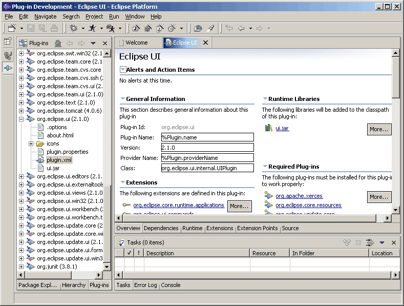
The Flat Look design may be more suitable for certain type of user tasks,
and more appealing to certain user profile.
However, this design should not be used just because it provides a different look
than the native platform look and feel. The use of Flat Look design should be
considered in the context of the supported user scenarios. This design is usually
a good fit for extensive property and configuration editing, such as editing
Eclipse's plugin.xml file, and J2EE Web application's deployment descriptors.
Guideline
16.1
Use Flat Look design for user scenarios that involve
extensive property and configuration editing.
When required, use a "More..." button for navigation purpose (function similar to a hyperlink).
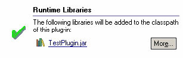
On the overview page, initially expand basic or core sections, but collapse advanced sections.
On non-overview pages, provide a "Home" icon which takes users back to the overview page
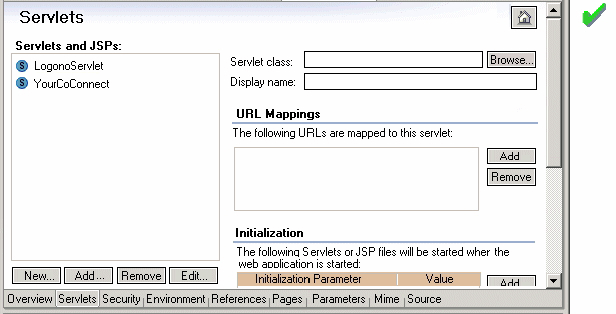
Guideline
16.2
Have the core sections on the overview page expanded,
and provide a "Home" icon on other pages to take users back to the overview page.
Don't use tabs within a Flat Look editor tab. Use an alternative design or rendering
of the tabs.
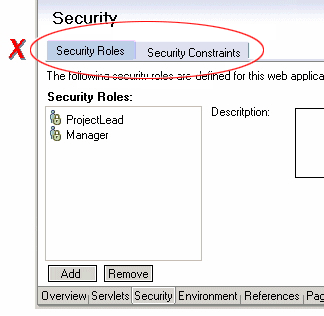
When applicable, always provide a "Source" tab.
Assign mnemonics for sections, controls, etc. for keyboard navigation.
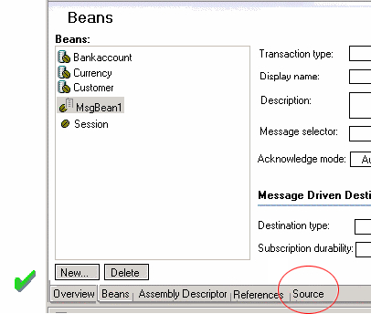
Editor and Outline View Interaction
Plug-ins that use Flat Look design for content editor should provide support for
full two way interactions between the editor and outline view.
In the outline view,
use grouping elements corresponding to tabs in the content editor for
the organization of the tree view.
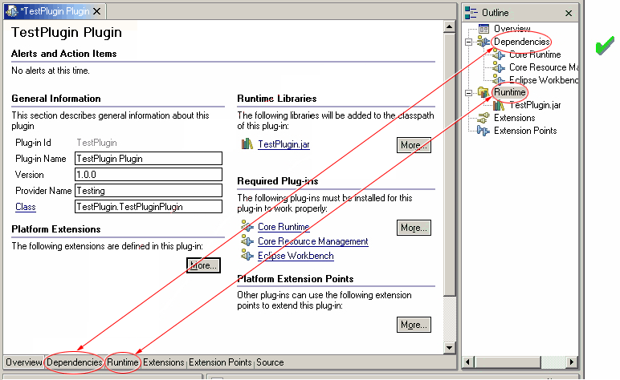
Guideline
16.3
Use grouping elements corresponding to tabs
in the Flat Look content editor for the organization of the tree view in outline view.
The Tao of Resource
In Eclipse, the notion of a tool disappears. In its place, is the
idea of a universal tool platform - an open, extensible IDE - where tool
plug-ins are added to extend the capabilities of the platform. These
plug-ins "teach" Eclipse how to work with things - java files, web content,
graphics, video - almost anything you can imagine. At an implementation
level, these plug-ins communicate using resources (projects, folders, and
files). The resource is the common medium for integration between
plugins and external tools.
The resource concept was developed for a number of reasons:
-
Integration between a plug-in from one vendor, and a plug-in from another,
is only possible if there is a common, well known data abstraction.
-
Integration with external tools is only possible if everything, at some
level, is a file.
Resources are also important at the UI level. If an object
command, decorator, or property page contribution is made to an IResource,
the platform will ensure that this contribution is visible in any view
or editor where the resource appears. For instance, a .java file
will be visible in the Navigator, the Hierarchy view, and the Packages
view. To the user, the .java file is the same object, regardless
of the view where it appears, so the object appearance, context menu, and
properties should be consistent in each view.
In some cases, the implementation of a particular view or editor may
wrap a resource within another object, for presentation purposes.
If the wrapper is equivalent to a resource, it is important to expose this
equivalence to the platform. If the resource is exposed, the platform
may apply resource contributions to the resource equivalent object.
This ensures presentation consistency for an object in the platform.
The underlying resource for an object is exposed by implementing IAdaptable
on the model object, and answering an IContributorResourceAdapter.
For more information on the implementation of an IContributorResourceAdapter,
refer to Eclipse Corner.
Guideline
17.1
Expose the resource for resource equivalent
model objects using an IContributorResourceAdapter.
Accessibility
In a view, editor, or other control, every features should be accessible
using a mouse or the keyboard.
In a dialog or wizard, a shortcut key should be
defined for each button or control. The shortcut key should be displayed
with an underline beneath the appropriate shortcut character.
Guideline
18.1
All of the features provided by a tool
should be accessible using a mouse or the keyboard.
Standard Accelerators
The Eclipse platform has defined a large number of shortcut keys.
Plug-in developers should make sure that the existing shortcut keys do
not conflict with the shortcut keys defined in the plug-in.
| Key |
{Key} by itself |
SHIFT+{Key} |
CTRL+{Key} |
CTRL+SHIFT+{Key} |
ALT+{Key} |
CTRL+ALT+{Key} |
| A |
|
|
Edit / Select All |
|
|
|
| B |
|
|
Project / Build |
|
|
(View) Bookmarks |
| C |
|
|
Edit / Copy |
|
|
|
| D |
|
|
(JDT editor) Display |
|
|
|
| E |
|
|
(JDT editor) Next Problem |
(JDT editor) Previous Problem |
|
|
| F |
|
|
Edit / Find / Replace |
|
|
|
| G |
|
|
|
|
|
|
| H |
|
|
Edit / Search |
|
|
|
| I |
|
|
|
|
|
|
| J |
|
|
|
|
|
|
| K |
|
|
|
|
|
(View) Tasks |
| L |
|
|
Edit / Go to Line |
|
|
|
| M |
|
|
|
(JDT editor) Add Import |
|
(JDT) Refactor / Move |
| N |
|
|
File / New / Other |
|
|
(View) Navigator |
| O |
|
|
|
(JDT editor) Organize Imports |
|
(View) Outline |
| P |
|
|
File / Print |
|
|
(View) Properties |
| Q |
|
|
(JDT editor) Inspect |
|
|
|
| R |
|
|
|
|
|
|
| S |
|
|
File / Save |
|
File / Save All |
Window / Switch to Editor |
| T |
|
|
|
(JDT) Open Type |
|
|
| U |
|
|
|
|
|
|
| V |
|
|
Edit / Paste |
|
|
|
| W |
|
|
|
|
|
|
| X |
|
|
Edit / Cut |
|
|
(JDT) Refactor / Extract method |
| Y |
|
|
Edit / Redo |
(JDT) Refactor / Redo |
|
|
| Z |
|
|
Edit / Undo |
(JDT) Refactor / Undo |
|
|
| Space |
|
|
(JDT editor) Content Assist |
|
|
|
| Backspace |
|
|
|
|
Windows: Undo |
|
| Tab |
|
|
(JDT editor) Shift Right |
(JDT editor) Shift Left |
|
|
| Insert |
|
Windows: Paste |
Windows: Copy |
|
|
|
| Delete |
Edit / Delete |
Windows: Cut |
Edit / Delete |
|
|
|
| Home |
|
|
|
|
|
|
| End |
|
|
|
|
|
|
| Page Up |
|
|
|
|
|
|
| Page Down |
|
|
|
|
|
|
| Insert |
|
|
|
|
|
|
| Delete |
|
|
|
|
|
|
| Hyphen (-) |
|
|
|
|
Show System Menu |
Show View Menu |
| Left Arrow |
|
|
|
|
|
|
| Right Arrow |
|
|
|
|
|
|
| Up Arrow |
|
|
|
|
|
|
| Down Arrow |
|
|
|
|
|
|
| F1 |
Help |
Help |
Help |
Help |
|
|
| F2 |
(Navigator view) Rename, (JDT editor) Open JavaDoc |
|
|
|
|
|
| F3 |
(JDT editor) Open on Selection |
|
|
|
|
|
| F4 |
(JDT editor) Open Type Hierarchy |
|
|
File / Close All |
File / Close |
|
| F5 |
(Navigator view) Refresh, (Properties view) Refresh, (Debug)
Step Into |
|
|
|
|
|
| F6 |
(Debug) Step Over |
|
Next Editor |
Previous Editor |
|
|
| F7 |
(Debug) Run to Return |
|
Next View |
Previous View |
|
|
| F8 |
(Debug) Resume |
|
|
|
|
|
| F9 |
|
|
|
|
|
|
| F10 |
(Debug) Relaunch last |
|
|
|
|
|
| F11 |
(Debug) Debug |
|
(Debug) Run |
|
|
|
| F12 |
Activate Editor |
|
Activate Editor |
|
|
|
Best Practices
In this section, we provide examples of best practices for designing and implementing
some common user interactions within the Eclipse platform.
Syntax and Compilation Error Handling
When designing editors that provide syntax or compilation checking support,
follow the Java tooling design in the Eclipse platform.
Provide on the fly syntax checking if possible. Use red "squiggle" to indicate where
the potential error is located in the source code. Use a red box on the side bar on the
right side to indicate the approximate error position in the file. Use a prominent marker
on the upper right hand corner to indicate that the file contains errors or warnings.
Use red color to indicate errors, and use yellow to indicate warnings.
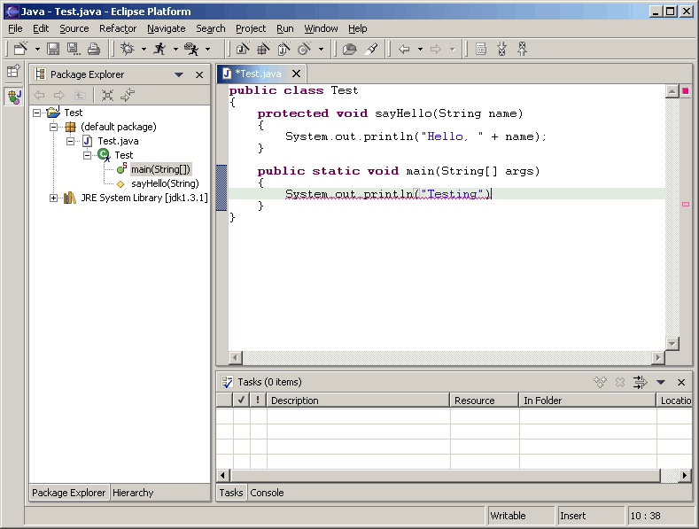
After users perform a save operation, user a more prominent marker on the left hand side
margin to indicate errors and warnings in the file. When using the mouse pointer to hover
over the marker, the description text should be displayed. In addition, show the
icon decorator in the content editor tab. In the tree view that shows the resource in
the Eclipse workspace, use icon decorator to indicate errors or warnings associated
with this resource, and propagate the icon decorator indication up to the parents
of the resource in the tree view. Finally, an entry should be added to the Task view
to list the errors and warnings.
Coding Assistance
In addition to supporting the standard content assist in an editor, editors should
exploit the use of Quick Fixes and Quick Assist. Use the light bulb marker on the
left hand side margin to provide suggestions on how to fix problems with the
source code. Users can click on the light bulb or use Edit -> Quick Fix menu item
to invoke this command.
Even when there are no syntax errors in the file, users should be able to obtain
certain quick assistance with their code using the Quick Fix mechanism.
For example, assigning an expression to a local variable.
If an editor is used for writing code in a given programming language,
hyper-linked code support should be enabled. While using the mouse pointer
to hover over the source code, pressing the Ctrl key will turn the programming language
constructs such as class, method, and field identifiers into clickable links
to the corresponding declaration.
When possible, a plug-in should provide refactoring support at the programming
language or application development level. For example, if users rename a method in
a Java class, refactoring support should enable users to automatically find and
fix up all references. If users change the URL for a given resource in a Web
application, refactoring support should enable users to automatically update
the references to the modified URL.
Context Menu
Here is one suggested process to reason why a menu item should be added or
removed from the context menu. The objective is to reduce the number of
context menu items to no more than 20.
First, remove menu items that are not sensitive to selections.
Second, remove menu items that are not frequently used.
Third,?examine the items that are not sensitive?to selection
but are frequently used. Add at most of 5 of these items back.
Fourth,?remove all disabled menu items, except for clipboard operations
such as copy and paste, and team, compare and replace submenus.
Fifth, remove menu items that are frequently used, selection sensitive,
but have a dominant keyboard shortcut key defined, except for
clipboard and save operations.
Labels, Fonts and Layout for Flat Look Design
For Flat Look design, when using buttons with ellipses
(except for the "More..." button), it should pop up a secondary window
which can be a dialog box or a wizard.
Use Title capitalization for section titles.
The distance between section columns should be 32 pixels.
On pages with listbox on the left hand side,
the distance be between the list box and the right-hand column
(e.g. showing properties for a selected listbox item) should be 10 pixels.
For labels and fields, use RGB value (160, 160, 164) for enabled state,
RBG value (0, 0, 0) for read-only state, and RBG value (128, 128, 128) for disabled state.
For listbox control, use RBG value (0, 0, 0) for the border to indicate enabled state,
use RBG value (128, 128, 128) for disabled state.
Decorators
Enabling and disabling the decorators are extremely useful when the decorations performed by two or more decorators conflict with each other. For example, the CVS plug-in might decorate the base image by superimposing the base image with a custom image while the "Decorate Example" plug-in might superimpose a different custom image at the same position thereby conflicting with the CVS plug-in decoration. If the decoration performed by two different decorators on the same resource conflict, users should appropriately enable / disable different decorators to get the required decoration.
Implementation tip:
It is very important to design custom decorators that don't conflict with basic decorations provided by different Eclipse views. For example, the package explorer view decorates Java files with problem markers (a problem marker is placed at the bottom left hand corner) if there are compilation errors. It is a bad practice to decorate resources with custom decoration exactly at the position of a problem marker and developers should avoid this. If the custom decoration is performed at the bottom left corner, then custom decoration and the problem marker decoration, if any, conflict each other and hence users will not be able to view the decorations. The solution to the above mentioned problem is to provide a custom image decoration at the bottom right corner which does not conflict with the basic image decoration provided by Eclipse. The top left corner is the second best place although it conflicts with the binary project decorator. The bottom left and top right should be avoided as they are decorated outside of the decorator mechanism
Checklist For Developers
Here is a checklist for developers who are developing UI plugins.
This could be used for certification purposes.
General UI Guidelines
The Spirit of Eclipse
Guideline 1.1
Follow and apply good user interface
design principles: user in control, directness, consistency, forgiveness,
feedback, aesthetics, and simplicity.
Guideline 1.2
Follow the platform lead for user interface
conventions.
Guideline 1.3
Be careful not to mix UI metaphors.
It may blur the original concept, and your own application.
Guideline 1.4
If you have an interesting idea, work
with the Eclipse community to make Eclipse a better platform for all.
Capitalization
Guideline
1.5
Use Headline style capitalization for
menus, tooltip and all titles, including those used for windows, dialogs, tabs, column headings
and push buttons. Capitalize the first and last words, and all nouns, pronouns,
adjectives, verbs and adverbs. Do not include ending punctuation.
Guideline 1.6
Use Sentence style capitalization for
all control labels in a dialog or window, including those for check boxes,
radio buttons, group labels, and simple text fields. Capitalize the
first letter of the first word, and any proper names such as the word Java.
Language
Guideline 1.7
Create localized version of the resources within your plug-in.
Error Handling
Guideline
1.8
When an error occurs which requires either
an explicit user input or immediate attention from users, communicate the
occurrence with a modal dialog.
Guideline
1.9
If a programming error occurs in the
product, communicate the occurrence with a dialog, and log it.
Visual Design
Consistency
Guideline 2.1
Re-use the core visual concepts to maintain consistent representation and meaning
across Eclipse plug-ins.
Icon Palettes
Guideline 2.2
Use the Eclipse 256 color palette for creating the active or selected state of
all icon types.
Guideline 2.3
Use the Eclipse 8 color palette for creating the enabled state of perspective,
view, toolbar, toolbar wizard, and local toolbar icons.
Guideline 2.4
Use the Eclipse 2 color palette for creating the disabled state of toolbar,
toolbar wizard, and local toolbar icons.
Icon Types
Guideline 2.5
Use the appropriate icon type in the location it is designed for within the
user interface.
Icon Size & Placement
Guideline 2.6
Follow the specific size specifications for each type of icon.
Guideline 2.7
Cut the icons with the specific placement shown to ensure alignment in the user interface.
Icon Positioning
Guideline 2.8
Follow the positioning guidelines for the different types of icons for optimal alignment
of these elements relative to one another.
Icon Positioning
Guideline 2.9
Use the Eclipse special blue 183 color palette for creating wizard graphics.
Wizard Size & Placement
Guideline 2.10
Follow the specific size specifications for wizard graphics.
Guideline 2.11
Cut the wizard graphics with the specific placement shown to ensure alignment
in the wizard banner area.
Implementation Conventions
Guideline 2.12
Follow the predefined directory structure and naming convention.
Guideline 2.13
Keep the original directory names provided.
Guideline 2.14
Minimize duplication of graphics within a plugin by keeping all graphics in one, or few, first level user interface directories.
Guideline 2.15
Use the active, enabled, and disabled states provided.
Guideline 2.16
Abbreviate file name instead of using the full icon name,
e.g. New Interface becomes "newint".
Guideline 2.17
Use lower case characters in your file names, e.g. DTD becomes "dtd".
Guideline 2.18
Use 10 characters or less in your file names if possible (underscores count as a character).
Guideline 2.19
Use a file name suffix that describes its location or function in the tool,
e.g. newint_wiz.
Guideline 2.20
Use transparent *.gif format for all user interface icons and wizard graphics,
unless the context requires a different file format.
Guideline 2.21
Keep the original file names provided.
Component Development
Commands
Guideline
3.1
Each command must have a label, tool tip,
and full color image. The label and tool tip must use Headline style
capitalization.
Guideline
3.2
The command tooltip should describe the
result of the command, not the current state of the command. Use the text same as that for the command label.
Guideline
3.3
Adopt the labeling terminology of the
workbench for New, Delete and Add commands.
Guideline
3.4
A command should only be enabled if it
can be completed successfully.
Guideline
3.5
Command enablement should be quick.
If command enablement cannot be quick, enable the command optimistically
and display an appropriate message if the command is invoked, but cannot
be completed.
Dialogs
Guideline 4.1
When a dialog opens, set the initial
focus to the first input control in the container. If there are no input controls, the initial focus should
be assigned to the default button.
Guideline 4.2
Slush Bucket widget (or Twin Box) should
flow from left to right with the source objects on the left hand side.
It should have the >, <, >>, << control buttons in this order.
Wizards
Guideline
5.1
Use a wizard for any task consisting
of many steps, which must be completed in a specific order.
Guideline
5.2
Each wizard must contain a header with
a banner graphic and a text area for user feedback. It must also
contain Back, Next, Finish, and Cancel buttons in the footer.
Guideline
5.3
Start the wizard with a prompt, not an
error message.
Guideline
5.4
Seed the fields within the wizard using
the current workbench state.
Guideline
5.5
Validate the wizard data in tab order.
Display a prompt when information is absent, and an error when information
is invalid.
Guideline
5.6
Only enable the Next / Finish buttons
if all required information in the dialog is present and valid.
Guideline
5.7
Remove all programming message ID's from
wizard text.
Guideline
5.8
Use a Browse Button whenever an existing
object is referenced in a wizard.
Guideline
5.9
If a new file is created, open the file
in an editor. If a group of files are created, open the most important,
or central file in an editor. Open the readme.html file upon creation of
an example project.
Guideline
5.10
If a new project is created, prompt users and change the
active perspective to suit the project type.
Guideline
5.11
If a new object is created, select and
reveal the new object in the appropriate view.
Guideline
5.12
Create folder objects in a wizard if
reasonable defaults can be defined.
Guideline
5.13
Use the term "Project name" for the input field label when the
item must be a Project; otherwise, use the term "Folder name". Do not qualify
the term.
Editors
Guideline
6.1
Use an editor to edit or browse a file,
document, or other primary content.
Guideline
6.2
Modifications made in an editor must
follow an open-save-close lifecycle model.
Guideline
6.3
Only one instance of an editor may exist,
for each editor input, within a perspective.
Guideline
6.4
It must be possible to open a separate
instance of an editor for each different input.
Guideline
6.5
The editor should be labeled with the
name of the file, document, or input being edited.
Guideline
6.6
In multipage editors, use a tab control
for page activation.Tab labels should be kept to one word, and two words
at most.
Guideline
6.7
All of the commands, except for the obvious commands, available in the editor
should be added to the window menu bar.
Guideline
6.8
Use the standard format for editor contributions
in the window menu bar.
Guideline
6.9
If an editor has support for Cut, Copy,
Paste, or any of the global commands, these commands must be executable from
the same commands in the window menu bar and toolbar.
Guideline
6.10
Fill the editor toolbar with the most
commonly used items in the view menu.
Guideline
6.11
Fill the context menu with selection
oriented commands.
Guideline
6.12
Use the standard format for editor context
menus.
Guideline
6.13
Fill the context menu with a fixed set
of commands for each selection type, and then enable or disable each to
reflect the selection state.
Guideline
6.14
Register all context menus in the editor
with the platform.
Guideline
6.15
Implement a Command Filter for each object
type in the editor.
Guideline
6.16
If the input to an editor is deleted,
and the editor contains no changes, the editor should be closed.
Guideline
6.17
If the input to an editor is deleted,
and the editor contains changes, the editor should give the user a chance
to save their changes to another location, and then close.
Guideline
6.18
If the resource is dirty, prefix the resource
name presented in the editor tab with an asterisk.
Guideline
6.19
Treat read-only editor input as you would
any other input. Enable the Save As if possible. Display "Read-only"
in the status bar area.
Guideline
6.20
If the data within an editor is too extensive
to see on a single screen, and will yield a structured outline, the editor
should provide an outline model to the Outline view.
Guideline
6.21
Notification about location between an
editor and the Outline view should be two-way. A context menu should be available
in the Outline view as appropriate.
Guideline
6.22
An error or warning image should be added
to items with the error or warning respectively. A container should have a red X if it there are errors on the container itself, a gray X if any of its descendents have errors (but not the container itself), and no X if neither the container nor any of its descendents have errors.
Guideline
6.23
If appropriate, implement the "Add Task"
feature in your editor.
Guideline
6.24
If appropriate, implement the "Add Bookmark"
feature in your editor.
Guideline
6.25
Editors with source lines of text should show the current line and optionally column numbers the status line. It's optional for the editor to show line numbers for each line in the editor itself.
Guideline
6.26
Table cell editors should support the
single-click activation model, and in edit mode, they should render complex
controls upon single-click.
Guideline
6.27
Changes made in a table cell editor should
be committed when a user clicks off the cell or hits the "Enter" key. Selection
should be cancelled when user hits the "Esc" key.First letter navigation
should be supported as a cursoring mechanism within a cell.
Guideline
6.28
When performing fine-grain error validation
in an editor, use red squiggles to underline the invalid content. When users move the mouse over the red squiggles, display the error text in a fly-over pop up box.
Guideline
6.29
Use the Task view to show errors found
when the Save command is invoked.
Guideline
6.30
If modifications to a resource are made
outside of the workbench, users should be prompted to either override the
changes made outside of the workbench, or back out of the Save operation
when the Save command is invoked in the editor.
Views
Guideline
7.1
Use a view to navigate a hierarchy of
information, open an editor, or display the properties of an object.
Guideline
7.2
Modifications made within a view must
be saved immediately.
Guideline
7.3
Only one instance of a view may exist
in a perspective.
Guideline
7.4
A view must be able to be opened in more than one perspective.
Guideline
7.5
A view can be opened from the Window
> Show View menu.
Guideline
7.6
The view label in the title bar must
be prefixed with the label of the view in the Perspective > Show View menu.
Guideline
7.7
If a view contains more than one control,
it may be advisable to split it up into two or more views.
Guideline
7.8
When a view first opens, derive the view
input from the state of the perspective.
Guideline
7.9
If a view displays a resource tree, consider
using the window input as the root of visible information in the view.
Guideline
7.10
Use the view pulldonw menu for presentation commands, not
selection-oriented commands.
Guideline
7.11
Use the standard order of commands for view pulldown
menus.
Guideline
7.12
Put only the most commonly used commands on the toolbar. Any command on a toolbar must also appear in a menu, either the context menu or the view menu.
Guideline
7.13
Fill the context menu with selection
oriented actions, not presentation actions.
Guideline
7.14
Use the standard order of commands for view context
menus.
Guideline
7.15
Fill the context menu with a fixed set
of commands for each selection type, and then enable or disable each to
reflect the selection state.
Guideline
7.16
If an object appears in more than one
view, it should have the same context menu in each.
Guideline
7.17
Register all context menus in the view
with the platform.
Guideline
7.18
Implement a Command Filter for each object
type in the view.
Guideline
7.19
If a view has support for Cut, Copy,
Paste, or any of the global commands, these commands must be executable from
the same commands in the window menu bar and toolbar.
Guideline
7.20
Persist the state of each view between
sessions.
Guideline
7.21
Navigation views should support "Link with Editor" on the view menu
Perspectives
Guideline
8.1
Create a new perspective type for long
lived tasks, which involve the performance of smaller, non-modal tasks.
Guideline
8.2
If you just want to expose a single view,
or two, extend an existing perspective type.
Guideline
8.3
The size and position of each view in
a perspective should be defined in a reasonable manner, such that the user
can resize or move a view if they desire it. When defining the initial layout, it is important to consider the overall flow between the views (and editors) in the perspective.
Guideline
8.4
If a perspective has just one part, it
may be better suited as a view or editor.
Guideline
8.5
If it is undesirable to have an editor
area in a perspective, hide it. Do not resize the editor area to
the point where it is no longer visible.
Guideline
8.6
Populate the window menu bar with commands
and command sets which are appropriate to the task orientation of the perspective,
and any larger workflow.
Guideline
8.7
A new perspective should be opened only
if the user explicitly states a desire to do so. In making this statement,
the user agrees to leave their old context, and create a new one.
Guideline
8.8
If a new perspective is opened as a side
effect of another command, the user should be able to turn this behavior
off.
Guideline
8.9
If a new perspective is opened, it should
be opened within the current window, or in a new window, depending
on the user preference.
Guideline
8.10
The list of shortcuts added to the New,
Open Perspective, and Show View menus should be at most 7 plus / minus
2 items.
Windows
Guideline
9.1
Use an Action Set to contribute actions
to the window menu bar and toolbar.
Guideline
9.2
Follow the platform lead when distributing
actions within an Action Set.
Guideline
9.3
Contribute actions to the window menu
bar first, and then to the window toolbar if they will be frequently used.
Guideline
9.4
Define each action set with a specific
task in mind.
Guideline
9.5
An action set should contain the smallest
possible semantic chunking of actions. Avoid the temptation to provide
only one action set for an entire plug-in.
Guideline
9.6
Use an action set to share a set of actions
which are useful in two or more views or editors.
Guideline
9.7
Let the user control the visible action
sets. Don't try to control it for them.
Guideline
9.8
"Open Object" actions must appear in
the Navigate pulldown menu of the window.
Guideline
9.9
Always use the global status bar to display
status related messages.
Properties
Guideline
10.1
Use the Properties view to edit the properties
of an object when quick access is important, and you will switch quickly
from object to object.
Guideline
10.2
Use a Properties Dialog to edit the properties
of an object which are expensive to calculate.
Guideline
10.3
Use a Properties Dialog to edit
the properties of an object which contain complex relationships to one
another.
Guideline
10.4
Properties Dialog should contain
the superset of items shown in the Properties view.
Widgets
Guideline
11.1
For Tree and Table widgets that have a checkbox associated
with a cell item, changing the current selection should not automatically change
the check state of the selected item. However, the current selection should be set
to a given item when its check state is changed.
Standard Components
Guideline
12.1
If appropriate, add actions to standard
components of Eclipse using the plug-in registry.
Guideline
12.2
If you subclass or copy any of the standard
components, always carry over the standard components' characteristics.
The Navigator View
Guideline
13.1
Add actions to the Navigator View menu,
toolbar, and context menu using the plug-in registry.
Guideline
13.2
Use the attributes defined in IResourceActionFilter.java
and IProjectActionFilter.java to control the visibility of context menu
actions in the Navigator.
Guideline
13.3
Use a "Navigate -> Show In Navigator" command in each
view, to link resources back to the Navigator.
The Tasks View
Guideline
14.1
Add markers (tasks, errors and warnings)
to the Tasks view using the Marker Manager services from the Core Resources
Management plugin.
Guideline
14.2
The description text of each marker should
be short and concise, so that it will fit in the status line of Eclipse.
Guideline
14.3
Add actions to the Tasks view menu, toolbar,
and context menu using the plug-in registry.
Guideline
14.4
Use the attributes defined in IMarkerActionFilter.java
to control the visibility of context menu actions in the Tasks view.
Guideline
14.5
Support F1 keyboard command and link it
to an infopop that gives a detailed description of the selected item in
the Task view.
The Preference Dialog
Guideline
15.1
Global options should be exposed within
the Preferences Dialog.
Guideline
15.2
Expose the preferences for a particular
view, editor or window in the view itself, via a menu or tool item.
Guideline
15.3
Start out with a single preference page.
Then evolve to more if you need to.
Guideline
15.4
If you create a preference group, use
the root page for frequently used preferences, or those preferences which
have wide spread effect. Specialize within the sub pages. The root
preference page should not be blank.
Guideline
15.5
Attempt to integrate plug-in preferences,
wizards, and views into existing categories for a new plug-in first, before
considering the creation of a new category.
Flat Look Design
Guideline
16.1
Use Flat Look design for user scenarios that involves
extensive property and configuration editing.
Guideline
16.2
Have the core sections on the overview page expanded,
and provide a "Home" icon on other pages to take users back to the overview page.
Guideline
16.3
Use grouping elements corresponding to tabs
in the Flat Look content editor for the organization of the tree view in outline view.
The Tao of Resource
Guideline
17.1
Expose the resource for resource equivalent
model objects using an IContributorResourceAdapter.
Accessibility
Guideline
18.1
All of the features provided by a tool
should be accessible using a mouse or the keyboard.
Glossary
-
Command
-
A command, which is invoked by a user to carry out some specific functions, may appear as an item in a menu, or an item in a toolbar. In reflection of this, it has attributes for the menu or tool item label, tooltip, and image.
As a plug-in developer, you can contribute commands to the window menu bar and toolbar, or to individual views and editors. Contribution to the window is performed using an action set, a set of task oriented commands which the user can show or hide. Contribution to a view or editor is performed using individual command.
-
Bookmarks View
-
A view used to browse the bookmarks in the workbench.
-
Editor
-
An editor is a visual component within a workbench page. It is typically
used to edit or browse a document or input object. The input is identified
using an <code>IEditorInput</code>. Modifications made in an
editor part follow an open-save-close lifecycle model (in contrast to a
view part, where modifications are saved to the workbench immediately).
-
File
-
An object in the workspace, analogous to files in the file system.
-
Folder
-
A container for files in the workspace.
-
Navigator View
-
A view used to browse the files in the workspace
-
Outline View
-
A view, commonly used to view the outline of the active editor.
-
Perspective
-
A perspective is a visual container for a set of views and editors (parts).
These parts exist wholly within the perspective and are not shared.
A perspective is also like a page within a book. It exists within
a window along with any number of other perspectives and, like a page within
a book, only one perspective is visible at any time.
-
Platform
-
A generic framework for the integration of tools.
-
Preferences
-
A Preference Page is used to edit the preferences for a feature in the
platform.
-
Project
-
A group of files and folders within the workspace. Each project maps
to a corresponding user specified directory in the file system.
-
Properties View
-
A view, typically used to browse the properties for an object in the active
editor or view.
-
Properties Dialog
-
A dialog for editing the properties of an object.
-
Property Page
-
A page within a Properties Dialog.
-
Resource
-
The generic name for projects, folders and files.
-
Tasks View
-
A view used to browse the tasks, errors, and warnings within the workspace.
-
View
-
A view is a visual component within a workbench page. It is typically
used to navigate a hierarchy of information (like the workspace), open
an editor, or display properties for the active editor. Modifications
made in a view are saved immediately (in contrast to an editor part, which
conforms to a more elaborate open-save-close lifecycle).
-
Wizard
-
A Wizard is typically used to create new resources, import resources, or
export resources.
-
Workbench
-
The Workbench provides the user interface structure for Eclipse. The purpose
of the Workbench is to facilitate the seamless integration of tools. These
tools contribute to extension points defined by the Workbench. The
Workbench is responsible for the presentation and coordination of the user
interface.
-
Workspace
-
The various tools plugged in to the Eclipse Platform operate on regular
files in the user's workspace. The workspace consists of one or more
top level projects, where each project maps to a corresponding user specified
directory in the file system. Each project contains a collection
of folders and files.
Acknowledgement
Screenshots contributed to Eclipse.org and used in this document,
originate from plugins released or under development by the following teams:
-
Java Development Tooling, Eclipse Subproject
-
WebSphere® Studio Application Developer, IBM Corporation
-
Rational XDE Professional, IBM Corporation.
By agreeing to share selected elements of their user interface designs
(both positive and negative), we feel that these teams have helped make
the UI guidelines stronger.
Revision History
This covers the more significant changes to the guidelines since Version 1.0:
Added |
General UI Principles : "Decorators" subsection |
| "Visual Design" section covers consistency, design and implementation issues for UI graphics |
| Component Development : "Widgets" subsection describes some of the recommended designs for Standard
Windows Toolkit (SWT) widgets |
| "Flat Look Design" section for user scenarios that involve extensive property and configuration editing |
| "Best Practices" section provides examples of best practices for designing and implementing some
common user interactions |
Removed |
Component Development : Perspectives : Opening a perspective in code - Guideline "Consider replacing the
perspective type before you open a new perspective" has been removed |
| Component Development : Windows : Actions - "Open Application" has been removed |
Modified |
Anything referred to as an "action" in Version 1.0 of the guidelines has been changed to "command" in
Version 2.1 of the guidelines |
| The full guideline document has been reformatted and the graphical presentation has been updated |
Version 2.1 February 2004
Copyright© 2001 - 2004 International Business Machine Corporation.
Java and all Java-based trademarks and logos are trademarks or registered trademarks of Sun Microsystems, Inc. in the United States, other countries, or both.
Microsoft, Windows, Windows NT, and the Windows logo are trademarks of Microsoft Corporation in the United States, other countries, or both.